5hmC data analysis
Shengtong Han
YYYY-MM-DD
Last updated: 2018-03-19
Code version: 4ba08f4
All samples are here: 48 ng (11); 24 ng (5); 12 ng (5); 6ng (5); 2.4 ng (5); 0.6ng (2).
Mouse genome mm9 has 2,654,911,517 bases, 507,439,500 (19.11324%) cytosines and 507,585,491 (19.11873%) Gumines.
48ng 5hmC replicates
There are eleven 48ng 5hmC replicates and each one has two strands, plus+minus.
| rep | 1 | 2 | 3 | 4 | 5 | 6 | 7 | 8 | 9 | 10 | 11 | combine |
|---|---|---|---|---|---|---|---|---|---|---|---|---|
| #reads(plus) | 3,516,149 | 3,781,024 | 2,014,714 | 6,982,592 | 4,741,743 | 5,036,004 | 5,825,862 | 5,532,109 | 5,072,780 | 3,951,163 | 3,641,213 | 50,057,101 |
| #reads(minus) | 3,524,627 | 3,793,291 | 2,021,689 | 6,995,038 | 4,754,910 | 5,048,479 | 5,834,324 | 5,546,279 | 5,059,828 | 3,935,679 | 3,631,379 | 50,183,793 |
Downsample
Combine all 48ng replicates together, downsample \(40\%, 50\%, \cdots, 90\%\) reads, call peak windows, and see how #peak.windows (absolute peak windows or overlapping with other data) vary with number of reads.
samtools merge output.sorted.bam input1.sorted.bam input2.sorted.bam # merge together sorted bam filessamtools view -s 0.25 -b input.all.bam > input_25p.sam # downsample 25% reads | ratio | plus | minus |
|---|---|---|
| 40% | 20,027,749 | 20,070,771 |
| 50% | 25,029,777 | 25,091,279 |
| 60% | 30,035,435 | 30,110,375 |
| 70% | 35,040,232 | 35,127,703 |
| 80% | 40,044,961 | 40,149,113 |
| 90% | 45,048,466 | 45,168,687 |
| 100% | 50,057,101 | 50,183,793 |
Reads distribution
Windows with reads greater than 10 are put together into category 11.
reads.plus=matrix(nrow=11, ncol=1)
rownames(reads.plus)=c(seq(1,10), ">10"); reads.plus[,1]=c(9371352, 2190106, 772609, 334745, 162092, 84161, 45907, 25962, 15529, 9208, 16960)
barplot(reads.plus[,1]/sum(reads.plus[,1]), ylim=c(0,1), ylab="Freq", main="Frequency of peak windows (40% reads plus)", xlab="Number of reads")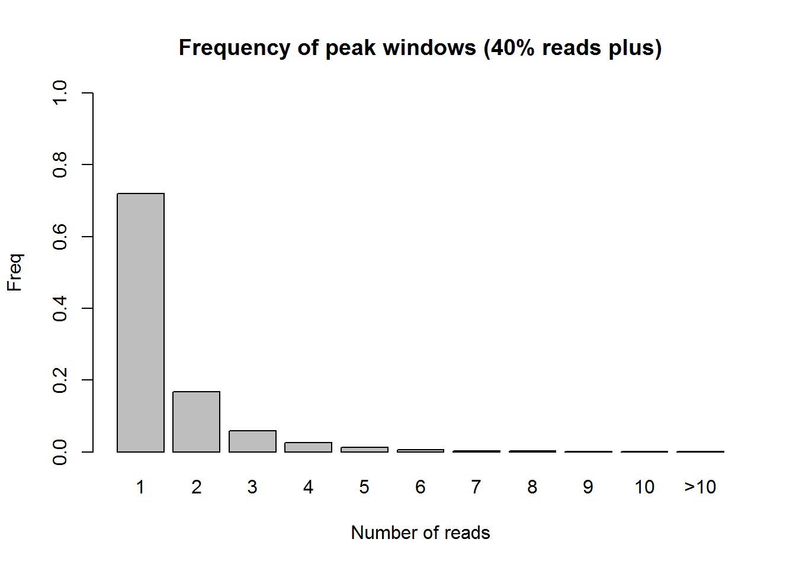
reads.plus=matrix(nrow=11, ncol=1)
rownames(reads.plus)=c(seq(1,10), ">10"); reads.plus[,1]=c(14075383, 4568606, 2003109, 1078497, 642833, 411173, 274861, 188434, 133511, 95662, 300518)
barplot(reads.plus[,1]/sum(reads.plus[,1]), ylim=c(0,1), ylab="Freq", main="Frequency of peak windows (100% reads plus)", xlab="Number of reads")
For each down sample, call base level coverage, call peak windows and count how many peak windows at specified FDR level.
num.win.FDR5per=c(759517, 969627, 1299793, 1599795, 1891138, 2107755, 2368196)
num.reads=c(20070771, 25091279, 30110375, 35127703, 40149113, 45168687, 50183793)
plot(num.reads, num.win.FDR5per, xlab="Number of reads", ylab="# peak windowsof 20 bp at FDR 0.05", type="o", main="minus strands")
num.win.FDR5per=c(760022, 968832, 1309038, 1597802, 1905666, 2124123, 2366463)
num.reads=c(20027749, 25029777, 30035435, 35040232, 40044961, 45048466, 50057101)
plot(num.reads, num.win.FDR5per, xlab="Number of reads", ylab="# peak windowsof 20 bp at FDR 0.05", type="o", main="plus strands")
Based on the current observations, the number of peak windows grows as the read coverage increases, it does not show significant plateau.
Comparison with Dali’s Peaks
There are 64865 peak windows of varying size in Dali’s data. With each down sample, call peak windows of 20bp.
jump.rate.minus=c(0.1853, 0.1842, 0.1779, 0.1722, 0.1678, 0.1648, 0.1633)
jump.rate.plus=c(0.1850, 0.1840, 0.1775, 0.1717, 0.1669, 0.1635, 0.1631)
dali.rate.minus=c(0.7455, 0.7967, 0.8420, 0.8654, 0.8816, 0.8898, 0.8988)
dali.rate.plus=c(0.7456, 0.7956, 0.8427, 0.8657, 0.8810, 0.8897, 0.8982)
par(mfrow=c(1,2), oma = c(0, 0, 2, 0))
plot(jump.rate.minus, ylim=c(0, 1), type="o", xaxt='n', xlab="", ylab="Proportion of Jump-seq", col=1, main="20bp, FDR 0.05", cex.main=0.8, cex.lab=0.8)
lines(jump.rate.plus, col=2, type="o")
legend(1, 0.7, c("minus", "plus"), col=c(1,2), lty=c(1,1))
axis.labels <-c("40%", "50%", "60%", "70%", "80%", "90%", "100%")
axis(1, at=seq(1,7), labels=axis.labels, cex.axis=0.8)
plot(dali.rate.minus, ylim=c(0,1), type="o", xaxt='n', xlab="", ylab="Proportion of nano hmC_seal", col=3, main="20bp, FDR 0.05", cex.main=0.8, cex.lab=0.8)
lines(dali.rate.plus, col=4, type="o")
legend(1, 0.7, c("minus", "plus"), col=c(3,4), lty=c(1,1))
axis.labels <-c("40%", "50%", "60%", "70%", "80%", "90%", "100%")
axis(1, at=seq(1,7), labels=axis.labels, cex.axis=0.8)
mtext("overlap between Jump-seq & nano hmC_seal", outer = TRUE, cex = 1)
jump.rate.minus=c(0.1501, 0.1496, 0.1450, 0.1394, 0.1345, 0.1305, 0.1275)
jump.rate.plus=c(0.1495, 0.1488, 0.1447, 0.1392, 0.1344, 0.1304, 0.1274)
dali.rate.minus=c(0.8736, 0.8920, 0.9042, 0.9133, 0.9193, 0.9238, 0.9273)
dali.rate.plus=c(0.8732, 0.8913, 0.9036, 0.9132, 0.9187, 0.9242, 0.9271)
par(mfrow=c(1,2), oma = c(0, 0, 2, 0))
plot(jump.rate.minus, ylim=c(0, 1), type="o", xaxt='n', xlab="", ylab="Proportion of Jump-seq", col=1, main="20bp, FDR 0.5", cex.main=0.8, cex.lab=0.8)
lines(jump.rate.plus, col=2, type="o")
legend(1, 0.7, c("minus", "plus"), col=c(1,2), lty=c(1,1))
axis.labels <-c("40%", "50%", "60%", "70%", "80%", "90%", "100%")
axis(1, at=seq(1,7), labels=axis.labels, cex.axis=0.8)
plot(dali.rate.minus, ylim=c(0,1), type="o", xaxt='n', xlab="", ylab="Proportion of nano hmC_seal", col=3, main="20bp, FDR 0.5", cex.main=0.8, cex.lab=0.8)
lines(dali.rate.plus, col=4, type="o")
legend(1, 0.7, c("minus", "plus"), col=c(3,4), lty=c(1,1))
axis.labels <-c("40%", "50%", "60%", "70%", "80%", "90%", "100%")
axis(1, at=seq(1,7), labels=axis.labels, cex.axis=0.8)
mtext("overlap between Jump-seq & nano hmC_seal", outer = TRUE, cex = 1)
Cmparison with strong TAB-seq peaks
There are 2,057,636 strong base level peaks from TAB-seq. To compute overlapping rate, each base is extend by 10bp downstream, 10bp upstream, the same length as the called peak windows.
jump.rate.minus=c(0.3387, 0.3346, 0.3199, 0.3082, 0.2984, 0.2926, 0.2898)
jump.rate.plus=c(0.3397, 0.3354, 0.3208, 0.3094, 0.2989, 0.2919, 0.2902)
TAB.rate.minus=c(0.1577, 0.1947, 0.2424, 0.2810, 0.3152, 0.3392, 0.3713)
TAB.rate.plus=c(0.1582, 0.1950, 0.2445, 0.2813, 0.3172, 0.3407, 0.3713)
par(mfrow=c(1,2), oma = c(0, 0, 2, 0))
plot(jump.rate.minus, ylim=c(0, 1), type="o", xaxt='n', xlab="", ylab="Proportion of Jump-seq", col=1, main="20bp, FDR 0.5", cex.main=0.8, cex.lab=0.8)
lines(jump.rate.plus, col=2, type="o")
legend(1, 0.7, c("minus", "plus"), col=c(1,2), lty=c(1,1))
axis.labels <-c("40%", "50%", "60%", "70%", "80%", "90%", "100%")
axis(1, at=seq(1,7), labels=axis.labels, cex.axis=0.8)
plot(TAB.rate.minus, ylim=c(0,1), type="o", xaxt='n', xlab="", ylab="Proportion of strong TAB-seq", col=3, main="20bp, FDR 0.5", cex.main=0.8, cex.lab=0.8)
lines(TAB.rate.plus, col=4, type="o")
legend(1, 0.7, c("minus", "plus"), col=c(3,4), lty=c(1,1))
axis.labels <-c("40%", "50%", "60%", "70%", "80%", "90%", "100%")
axis(1, at=seq(1,7), labels=axis.labels, cex.axis=0.8)
mtext("overlap between Jump-seq & strong TAB-seq", outer = TRUE, cex = 1)
Sensitivity with 100% reads
Senstivibity is defined as the proportion of nano hmc seal or strong Tab-seq that are recovered by jump seq peak windows at FDR0.05 with 100% reads here.
ratio=matrix(nrow=2, ncol=2)
ratio[,1]=c(0.9271, 0.3713)
ratio[,2]=c(0.9273, 0.3713)
rownames(ratio)=c("Nano_seal", "Strong Tab-seq")
par(mfrow=c(1,2))
barplot(ratio[,1], beside=F, ylim=c(0,1.2), col=c("red", "darkblue"), xlab=c("plus strand"), main="", ylab="Sensitivity")
text(0.6, 1.0, ratio[1,1])
text(2, 0.45, ratio[2,1])
barplot(ratio[,2], beside=F, ylim=c(0,1.2), col=c("red", "darkblue"), xlab=c("minus strand"), main="", ylab="Sensitivity")
text(0.6, 1.0, ratio[1,2])
text(2, 0.45, ratio[2,2])

This figure shows the sensitivity of the method defined as the proportion of peak windows by other methods (Tab-seq and Nano seal ) that are recovered by our method
Enrichment (100% reads minus )
To do enrichments analysis, peak windows are called with varying p values. Use FDR 0.05 as threshold to select enriched windows. Randomly pick the same number of windows as enriched windows from the whole genome as background. Perform enrichment analysis for enriched windows versus background windows when overlapping with nano hmC_seal and strong TAB-seq. FDR 0.05 is used throughout and stated clearly otherwise.
count=matrix(nrow=2, ncol=2)
count[,1]=c(519216, 73689)
count[,2]=3789453-count[,1]
barplot(count[,1], beside=F, col=c("red", "darkblue"), legend=c("Observed", "Expected"), xlab="hmC_Seal", main="48ng(combine) minus strand (FDR 0.05)", ylab="Number of peak windows")
count=matrix(nrow=2, ncol=2)
count[,1]=c(921479, 98580)
count[,2]=3789453-count[,1]
pval=fisher.test(count, alternative = "greater")$p.value
barplot(count[,1], beside=F, col=c("red", "darkblue"), legend=c("Observed", "Expected"), xlab="strong TAB-seq", main="48ng(combine) minus strand (FDR 0.05)", ylab="Number of peak windows")
Jump distribution
The reference is GSM882244_FDR_0.0484. First got non-overlapping 5hmC regions and make sure each window has only one 5hmC site. For each window, count the reads depth at every site, then add up reads depth of these non-overlapping windows. Reads distribution is the accumulative reads depth at every base of all non-overlapping windows. Input Bam file is the replicate with largest number of reads.
minus.48ng=read.table("D:\\ResearchWork\\StatisticalGenetics\\JumpSeq\\JumpSeq-project\\data\\20161115_5hmC_Jump_Seq_2hmC_spike_in.mm9.umi_encoded_adaptor_removed_no_mismatch.sorted.dedup_GSM882244_FDR_0.0484_minus_with_1_coverage.ave.perbase", header=F)
par(mfrow=c(1,2), oma = c(0, 0, 2, 0))
plot(seq(-100, 100, by=1)-1,minus.48ng[,1], type="l", ylab="coverage", xlab="Distance", main="")
abline(v=0, col=2)
plot(seq(-10, 10, by=1)-1,minus.48ng[91:111,1], type="l", ylab="coverage", xlab="Distance", main="")
abline(v=0, col=2)
mtext("20161115_5hmC_Jump_Seq_2hmC_spike_in.minus", outer = TRUE, cex = 1)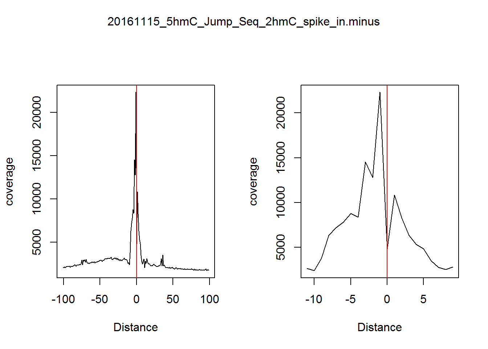
plus.48ng=read.table("D:\\ResearchWork\\StatisticalGenetics\\JumpSeq\\JumpSeq-project\\data\\20161115_5hmC_Jump_Seq_2hmC_spike_in.mm9.umi_encoded_adaptor_removed_no_mismatch.sorted.dedup_GSM882244_FDR_0.0484_plus_with_1_coverage.ave.perbase", header=F)
par(mfrow=c(1,2), oma = c(0, 0, 2, 0))
plot(seq(-100, 100, by=1)+1,plus.48ng[,1], type="l", ylab="coverage", xlab="Distance", main="")
abline(v=0, col=2)
plot(seq(-10, 10, by=1)+1,plus.48ng[91:111,1], type="l", ylab="coverage", xlab="Distance", main="")
abline(v=0, col=2)
mtext("20161115_5hmC_Jump_Seq_2hmC_spike_in.plus", outer = TRUE, cex = 1)
Look into jump distribution of one base nearby CpG in the center. Bam file are the combined 11 replicates.
plus.48ng=read.table("D:\\ResearchWork\\StatisticalGenetics\\JumpSeq\\JumpSeq-project\\data\\center_three_jump\\48ng_11rep_merge.sorted_GSM882244_FDR_0.0484_aa_plus_with_1_coverage.ave.perbase", header=F)
minus.48ng=read.table("D:\\ResearchWork\\StatisticalGenetics\\JumpSeq\\JumpSeq-project\\data\\center_three_jump\\48ng_11rep_merge.sorted_GSM882244_FDR_0.0484_aa_minus_with_1_coverage.ave.perbase", header=F)
par(mfrow=c(1,2), oma = c(0, 0, 2, 0))
plot(seq(-10, 10, by=1)+1,plus.48ng[91:111,1], type="l", ylab="coverage", xlab="Distance", main="plus")
abline(v=0, col=2)
plot(seq(-10, 10, by=1)-1,minus.48ng[91:111,1], type="l", ylab="coverage", xlab="Distance", main="minus")
abline(v=0, col=2)
mtext("***aC/Ga***-11rep", outer = TRUE, cex = 1)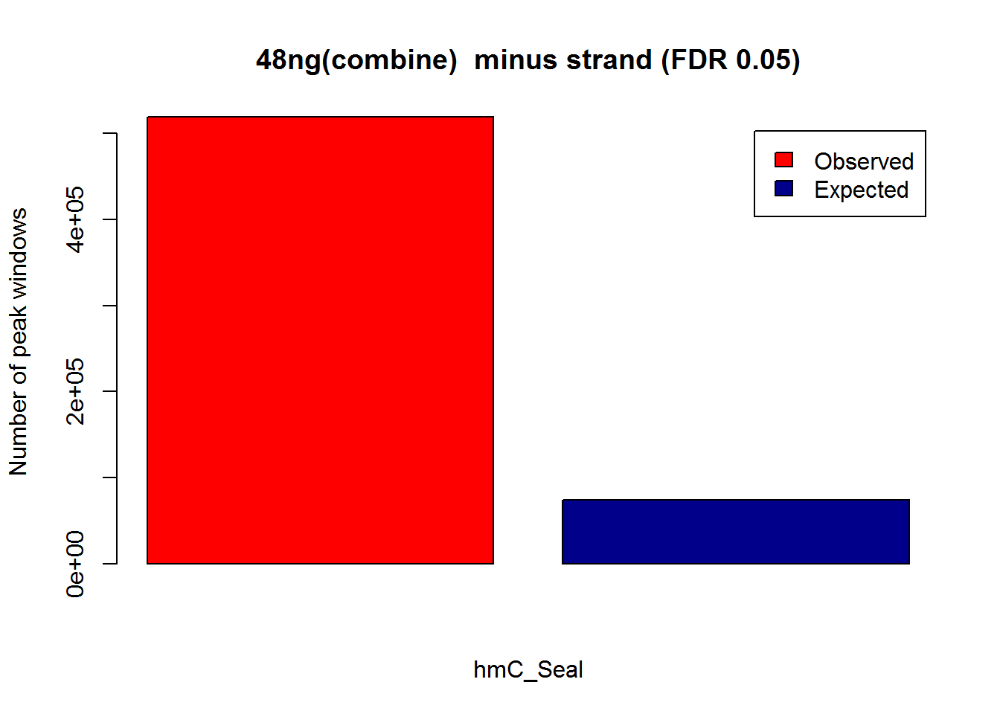
- aC/Ga means the center three nucleotides are aCa (plus strand) or aGa (minus strand).
plus.48ng=read.table("D:\\ResearchWork\\StatisticalGenetics\\JumpSeq\\JumpSeq-project\\data\\center_three_jump\\48ng_11rep_merge.sorted_GSM882244_FDR_0.0484_ac_plus_with_1_coverage.ave.perbase", header=F)
minus.48ng=read.table("D:\\ResearchWork\\StatisticalGenetics\\JumpSeq\\JumpSeq-project\\data\\center_three_jump\\48ng_11rep_merge.sorted_GSM882244_FDR_0.0484_ac_minus_with_1_coverage.ave.perbase", header=F)
par(mfrow=c(1,2), oma = c(0, 0, 2, 0))
plot(seq(-10, 10, by=1)+1,plus.48ng[91:111,1], type="l", ylab="coverage", xlab="Distance", main="plus")
abline(v=0, col=2)
plot(seq(-10, 10, by=1)-1,minus.48ng[91:111,1], type="l", ylab="coverage", xlab="Distance", main="minus")
abline(v=0, col=2)
mtext("***aC/Gc***-11rep", outer = TRUE, cex = 1)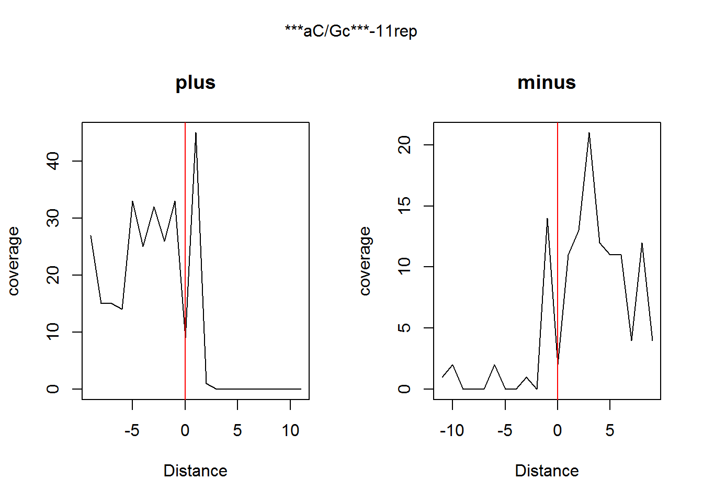
plus.48ng=read.table("D:\\ResearchWork\\StatisticalGenetics\\JumpSeq\\JumpSeq-project\\data\\center_three_jump\\48ng_11rep_merge.sorted_GSM882244_FDR_0.0484_ag_plus_with_1_coverage.ave.perbase", header=F)
minus.48ng=read.table("D:\\ResearchWork\\StatisticalGenetics\\JumpSeq\\JumpSeq-project\\data\\center_three_jump\\48ng_11rep_merge.sorted_GSM882244_FDR_0.0484_ag_minus_with_1_coverage.ave.perbase", header=F)
par(mfrow=c(1,2), oma = c(0, 0, 2, 0))
plot(seq(-10, 10, by=1)+1,plus.48ng[91:111,1], type="l", ylab="coverage", xlab="Distance", main="plus")
abline(v=0, col=2)
plot(seq(-10, 10, by=1)-1,minus.48ng[91:111,1], type="l", ylab="coverage", xlab="Distance", main="minus")
abline(v=0, col=2)
mtext("***aC/Gg***-11rep", outer = TRUE, cex = 1)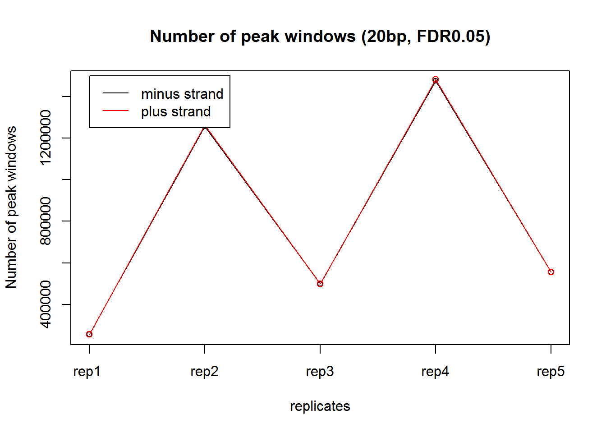
plus.48ng=read.table("D:\\ResearchWork\\StatisticalGenetics\\JumpSeq\\JumpSeq-project\\data\\center_three_jump\\48ng_11rep_merge.sorted_GSM882244_FDR_0.0484_at_plus_with_1_coverage.ave.perbase", header=F)
minus.48ng=read.table("D:\\ResearchWork\\StatisticalGenetics\\JumpSeq\\JumpSeq-project\\data\\center_three_jump\\48ng_11rep_merge.sorted_GSM882244_FDR_0.0484_at_minus_with_1_coverage.ave.perbase", header=F)
par(mfrow=c(1,2), oma = c(0, 0, 2, 0))
plot(seq(-10, 10, by=1)+1,plus.48ng[91:111,1], type="l", ylab="coverage", xlab="Distance", main="plus")
abline(v=0, col=2)
plot(seq(-10, 10, by=1)-1,minus.48ng[91:111,1], type="l", ylab="coverage", xlab="Distance", main="minus")
abline(v=0, col=2)
mtext("***aC/Gt***-11rep", outer = TRUE, cex = 1)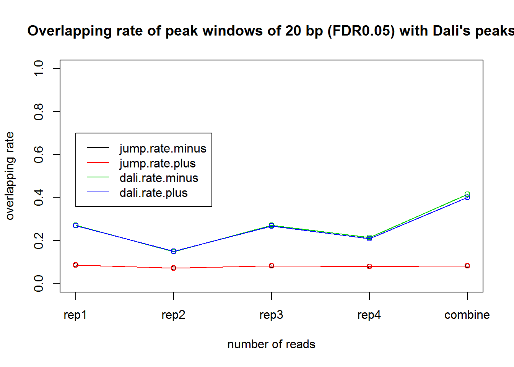
plus.48ng=read.table("D:\\ResearchWork\\StatisticalGenetics\\JumpSeq\\JumpSeq-project\\data\\center_three_jump\\48ng_11rep_merge.sorted_GSM882244_FDR_0.0484_ca_plus_with_1_coverage.ave.perbase", header=F)
minus.48ng=read.table("D:\\ResearchWork\\StatisticalGenetics\\JumpSeq\\JumpSeq-project\\data\\center_three_jump\\48ng_11rep_merge.sorted_GSM882244_FDR_0.0484_ca_minus_with_1_coverage.ave.perbase", header=F)
par(mfrow=c(1,2), oma = c(0, 0, 2, 0))
plot(seq(-10, 10, by=1)+1,plus.48ng[91:111,1], type="l", ylab="coverage", xlab="Distance", main="plus")
abline(v=0, col=2)
plot(seq(-10, 10, by=1)-1,minus.48ng[91:111,1], type="l", ylab="coverage", xlab="Distance", main="minus")
abline(v=0, col=2)
mtext("***cC/Ga***-11rep", outer = TRUE, cex = 1)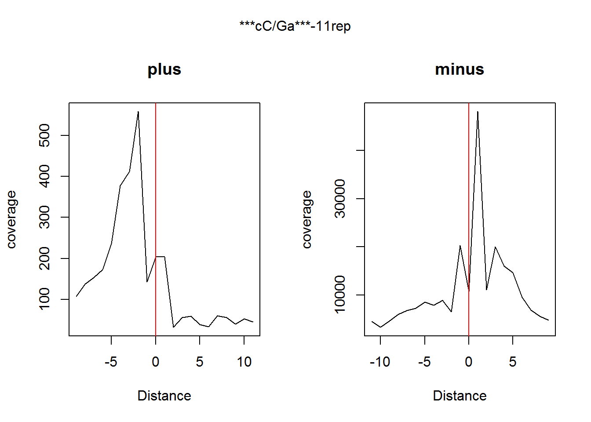
plus.48ng=read.table("D:\\ResearchWork\\StatisticalGenetics\\JumpSeq\\JumpSeq-project\\data\\center_three_jump\\48ng_11rep_merge.sorted_GSM882244_FDR_0.0484_cc_plus_with_1_coverage.ave.perbase", header=F)
minus.48ng=read.table("D:\\ResearchWork\\StatisticalGenetics\\JumpSeq\\JumpSeq-project\\data\\center_three_jump\\48ng_11rep_merge.sorted_GSM882244_FDR_0.0484_cc_minus_with_1_coverage.ave.perbase", header=F)
par(mfrow=c(1,2), oma = c(0, 0, 2, 0))
plot(seq(-10, 10, by=1)+1,plus.48ng[91:111,1], type="l", ylab="coverage", xlab="Distance", main="plus")
abline(v=0, col=2)
plot(seq(-10, 10, by=1)-1,minus.48ng[91:111,1], type="l", ylab="coverage", xlab="Distance", main="minus")
abline(v=0, col=2)
mtext("***cC/Gc***-11rep", outer = TRUE, cex = 1)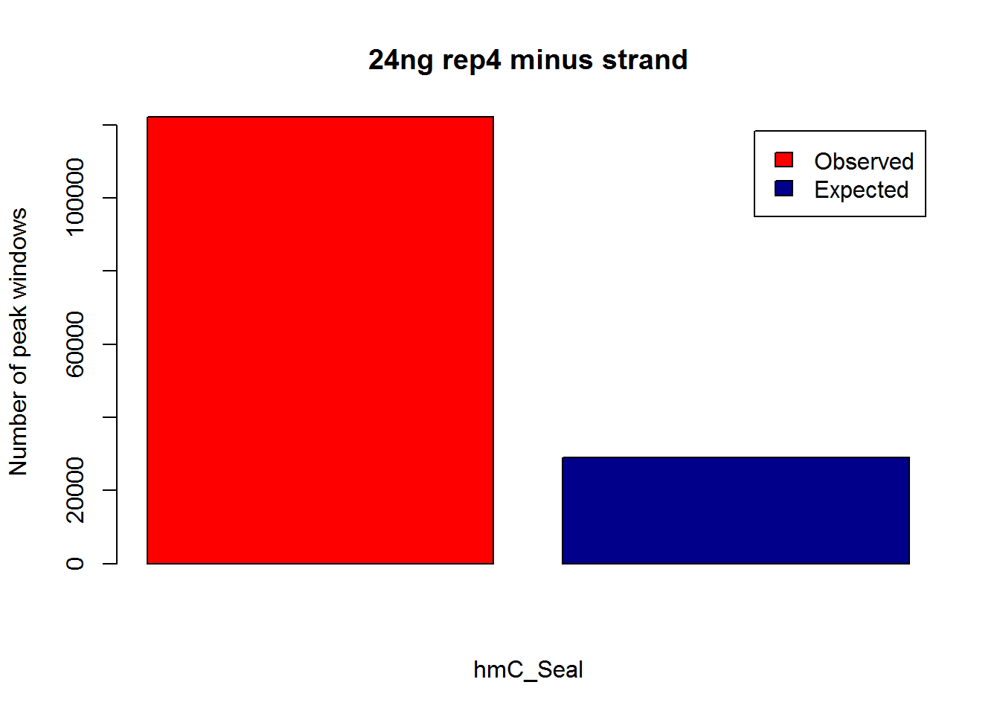
plus.48ng=read.table("D:\\ResearchWork\\StatisticalGenetics\\JumpSeq\\JumpSeq-project\\data\\center_three_jump\\48ng_11rep_merge.sorted_GSM882244_FDR_0.0484_cg_plus_with_1_coverage.ave.perbase", header=F)
minus.48ng=read.table("D:\\ResearchWork\\StatisticalGenetics\\JumpSeq\\JumpSeq-project\\data\\center_three_jump\\48ng_11rep_merge.sorted_GSM882244_FDR_0.0484_cg_minus_with_1_coverage.ave.perbase", header=F)
par(mfrow=c(1,2), oma = c(0, 0, 2, 0))
plot(seq(-10, 10, by=1)+1,plus.48ng[91:111,1], type="l", ylab="coverage", xlab="Distance", main="plus")
abline(v=0, col=2)
plot(seq(-10, 10, by=1)-1,minus.48ng[91:111,1], type="l", ylab="coverage", xlab="Distance", main="minus")
abline(v=0, col=2)
mtext("***cC/Gg***-11rep", outer = TRUE, cex = 1)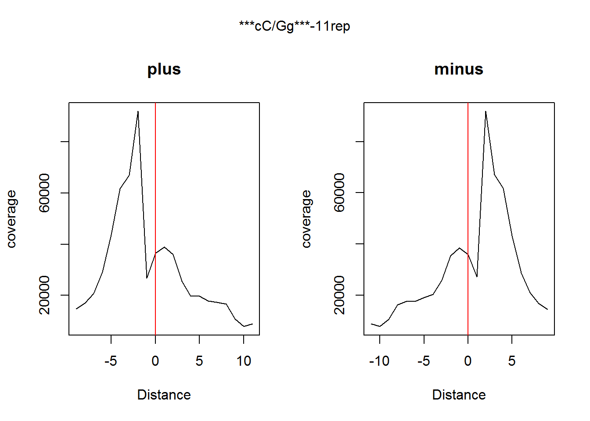
plus.48ng=read.table("D:\\ResearchWork\\StatisticalGenetics\\JumpSeq\\JumpSeq-project\\data\\center_three_jump\\48ng_11rep_merge.sorted_GSM882244_FDR_0.0484_ct_plus_with_1_coverage.ave.perbase", header=F)
minus.48ng=read.table("D:\\ResearchWork\\StatisticalGenetics\\JumpSeq\\JumpSeq-project\\data\\center_three_jump\\48ng_11rep_merge.sorted_GSM882244_FDR_0.0484_ct_minus_with_1_coverage.ave.perbase", header=F)
par(mfrow=c(1,2), oma = c(0, 0, 2, 0))
plot(seq(-10, 10, by=1)+1,plus.48ng[91:111,1], type="l", ylab="coverage", xlab="Distance", main="plus")
abline(v=0, col=2)
plot(seq(-10, 10, by=1)-1,minus.48ng[91:111,1], type="l", ylab="coverage", xlab="Distance", main="minus")
abline(v=0, col=2)
mtext("***cC/Gt***-11rep", outer = TRUE, cex = 1)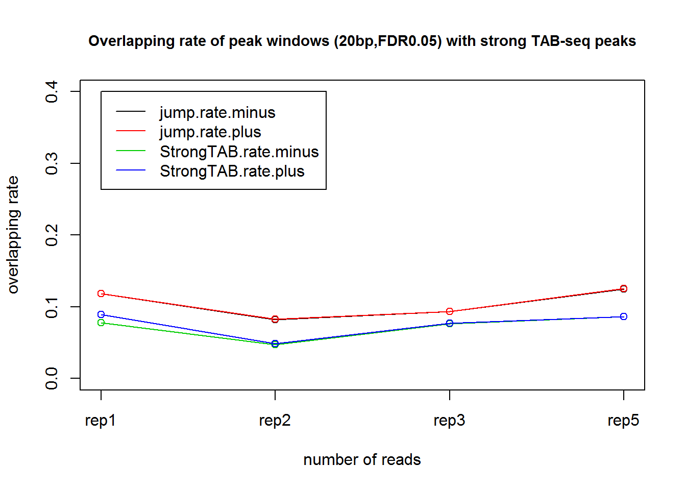
plus.48ng=read.table("D:\\ResearchWork\\StatisticalGenetics\\JumpSeq\\JumpSeq-project\\data\\center_three_jump\\48ng_11rep_merge.sorted_GSM882244_FDR_0.0484_ga_plus_with_1_coverage.ave.perbase", header=F)
minus.48ng=read.table("D:\\ResearchWork\\StatisticalGenetics\\JumpSeq\\JumpSeq-project\\data\\center_three_jump\\48ng_11rep_merge.sorted_GSM882244_FDR_0.0484_ga_minus_with_1_coverage.ave.perbase", header=F)
par(mfrow=c(1,2), oma = c(0, 0, 2, 0))
plot(seq(-10, 10, by=1)+1,plus.48ng[91:111,1], type="l", ylab="coverage", xlab="Distance", main="plus")
abline(v=0, col=2)
plot(seq(-10, 10, by=1)-1,minus.48ng[91:111,1], type="l", ylab="coverage", xlab="Distance", main="minus")
abline(v=0, col=2)
mtext("***gC/Ga***-11rep", outer = TRUE, cex = 1)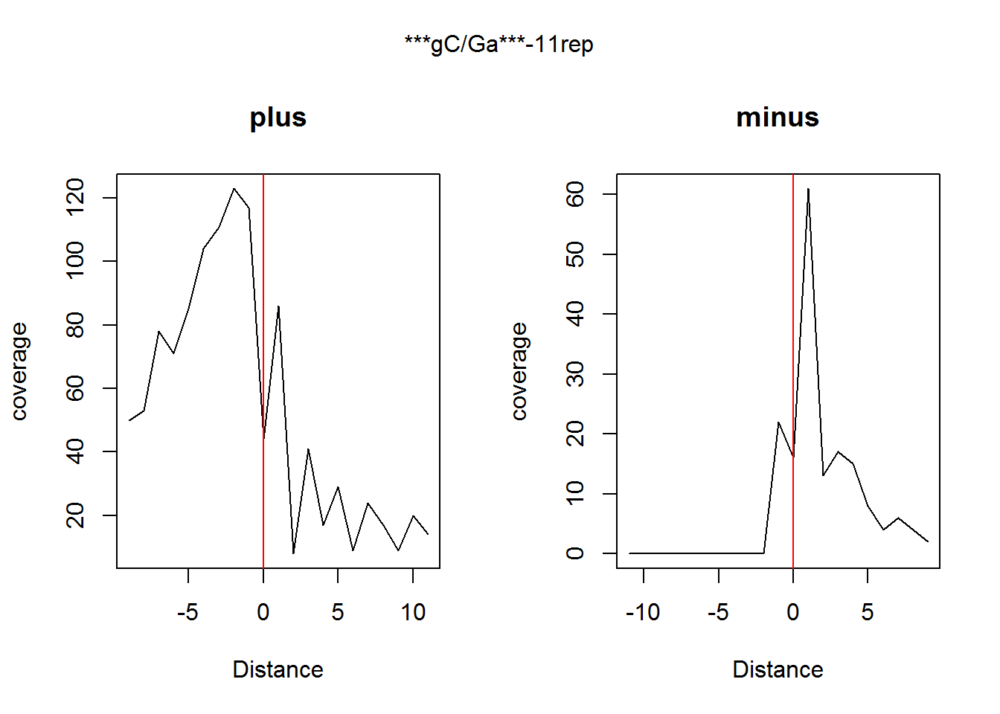
plus.48ng=read.table("D:\\ResearchWork\\StatisticalGenetics\\JumpSeq\\JumpSeq-project\\data\\center_three_jump\\48ng_11rep_merge.sorted_GSM882244_FDR_0.0484_gc_plus_with_1_coverage.ave.perbase", header=F)
minus.48ng=read.table("D:\\ResearchWork\\StatisticalGenetics\\JumpSeq\\JumpSeq-project\\data\\center_three_jump\\48ng_11rep_merge.sorted_GSM882244_FDR_0.0484_gc_minus_with_1_coverage.ave.perbase", header=F)
par(mfrow=c(1,2), oma = c(0, 0, 2, 0))
plot(seq(-10, 10, by=1)+1,plus.48ng[91:111,1], type="l", ylab="coverage", xlab="Distance", main="plus")
abline(v=0, col=2)
plot(seq(-10, 10, by=1)-1,minus.48ng[91:111,1], type="l", ylab="coverage", xlab="Distance", main="minus")
abline(v=0, col=2)
mtext("***gC/Gc***-11rep", outer = TRUE, cex = 1)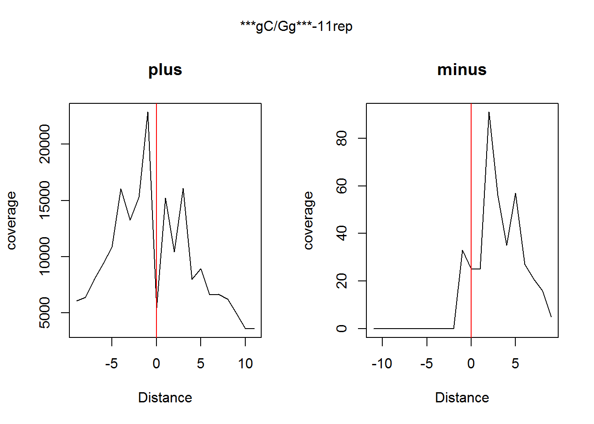
plus.48ng=read.table("D:\\ResearchWork\\StatisticalGenetics\\JumpSeq\\JumpSeq-project\\data\\center_three_jump\\48ng_11rep_merge.sorted_GSM882244_FDR_0.0484_gg_plus_with_1_coverage.ave.perbase", header=F)
minus.48ng=read.table("D:\\ResearchWork\\StatisticalGenetics\\JumpSeq\\JumpSeq-project\\data\\center_three_jump\\48ng_11rep_merge.sorted_GSM882244_FDR_0.0484_gg_minus_with_1_coverage.ave.perbase", header=F)
par(mfrow=c(1,2), oma = c(0, 0, 2, 0))
plot(seq(-10, 10, by=1)+1,plus.48ng[91:111,1], type="l", ylab="coverage", xlab="Distance", main="plus")
abline(v=0, col=2)
plot(seq(-10, 10, by=1)-1,minus.48ng[91:111,1], type="l", ylab="coverage", xlab="Distance", main="minus")
abline(v=0, col=2)
mtext("***gC/Gg***-11rep", outer = TRUE, cex = 1)
plus.48ng=read.table("D:\\ResearchWork\\StatisticalGenetics\\JumpSeq\\JumpSeq-project\\data\\center_three_jump\\48ng_11rep_merge.sorted_GSM882244_FDR_0.0484_gt_plus_with_1_coverage.ave.perbase", header=F)
minus.48ng=read.table("D:\\ResearchWork\\StatisticalGenetics\\JumpSeq\\JumpSeq-project\\data\\center_three_jump\\48ng_11rep_merge.sorted_GSM882244_FDR_0.0484_gt_minus_with_1_coverage.ave.perbase", header=F)
par(mfrow=c(1,2), oma = c(0, 0, 2, 0))
plot(seq(-10, 10, by=1)+1,plus.48ng[91:111,1], type="l", ylab="coverage", xlab="Distance", main="plus")
abline(v=0, col=2)
plot(seq(-10, 10, by=1)-1,minus.48ng[91:111,1], type="l", ylab="coverage", xlab="Distance", main="minus")
abline(v=0, col=2)
mtext("***gC/Gt***-11rep", outer = TRUE, cex = 1)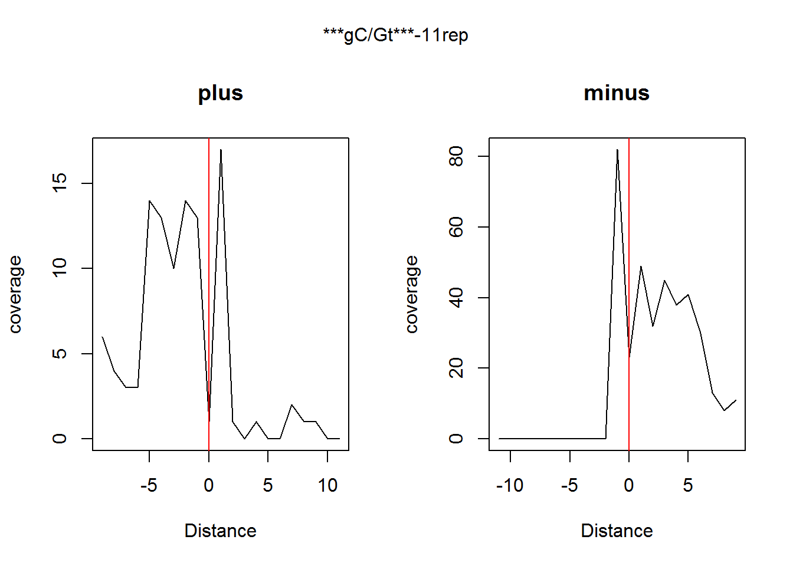
plus.48ng=read.table("D:\\ResearchWork\\StatisticalGenetics\\JumpSeq\\JumpSeq-project\\data\\center_three_jump\\48ng_11rep_merge.sorted_GSM882244_FDR_0.0484_ta_plus_with_1_coverage.ave.perbase", header=F)
minus.48ng=read.table("D:\\ResearchWork\\StatisticalGenetics\\JumpSeq\\JumpSeq-project\\data\\center_three_jump\\48ng_11rep_merge.sorted_GSM882244_FDR_0.0484_ta_minus_with_1_coverage.ave.perbase", header=F)
par(mfrow=c(1,2), oma = c(0, 0, 2, 0))
plot(seq(-10, 10, by=1)+1,plus.48ng[91:111,1], type="l", ylab="coverage", xlab="Distance", main="plus")
abline(v=0, col=2)
plot(seq(-10, 10, by=1)-1,minus.48ng[91:111,1], type="l", ylab="coverage", xlab="Distance", main="minus")
abline(v=0, col=2)
mtext("***tC/Ga***-11rep", outer = TRUE, cex = 1)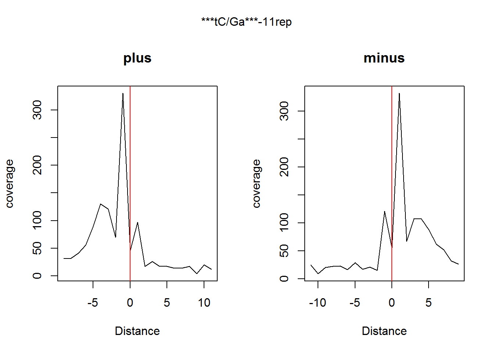
plus.48ng=read.table("D:\\ResearchWork\\StatisticalGenetics\\JumpSeq\\JumpSeq-project\\data\\center_three_jump\\48ng_11rep_merge.sorted_GSM882244_FDR_0.0484_tc_plus_with_1_coverage.ave.perbase", header=F)
minus.48ng=read.table("D:\\ResearchWork\\StatisticalGenetics\\JumpSeq\\JumpSeq-project\\data\\center_three_jump\\48ng_11rep_merge.sorted_GSM882244_FDR_0.0484_tc_minus_with_1_coverage.ave.perbase", header=F)
par(mfrow=c(1,2), oma = c(0, 0, 2, 0))
plot(seq(-10, 10, by=1)+1,plus.48ng[91:111,1], type="l", ylab="coverage", xlab="Distance", main="plus")
abline(v=0, col=2)
plot(seq(-10, 10, by=1)-1,minus.48ng[91:111,1], type="l", ylab="coverage", xlab="Distance", main="minus")
abline(v=0, col=2)
mtext("***tC/Gc***-11rep", outer = TRUE, cex = 1)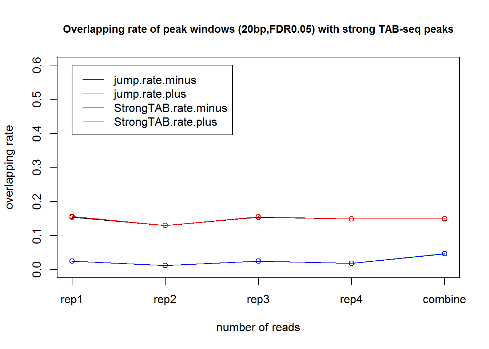
plus.48ng=read.table("D:\\ResearchWork\\StatisticalGenetics\\JumpSeq\\JumpSeq-project\\data\\center_three_jump\\48ng_11rep_merge.sorted_GSM882244_FDR_0.0484_tg_plus_with_1_coverage.ave.perbase", header=F)
minus.48ng=read.table("D:\\ResearchWork\\StatisticalGenetics\\JumpSeq\\JumpSeq-project\\data\\center_three_jump\\48ng_11rep_merge.sorted_GSM882244_FDR_0.0484_tg_minus_with_1_coverage.ave.perbase", header=F)
par(mfrow=c(1,2), oma = c(0, 0, 2, 0))
plot(seq(-10, 10, by=1)+1,plus.48ng[91:111,1], type="l", ylab="coverage", xlab="Distance", main="plus")
abline(v=0, col=2)
plot(seq(-10, 10, by=1)-1,minus.48ng[91:111,1], type="l", ylab="coverage", xlab="Distance", main="minus")
abline(v=0, col=2)
mtext("***tC/Gg***-11rep", outer = TRUE, cex = 1)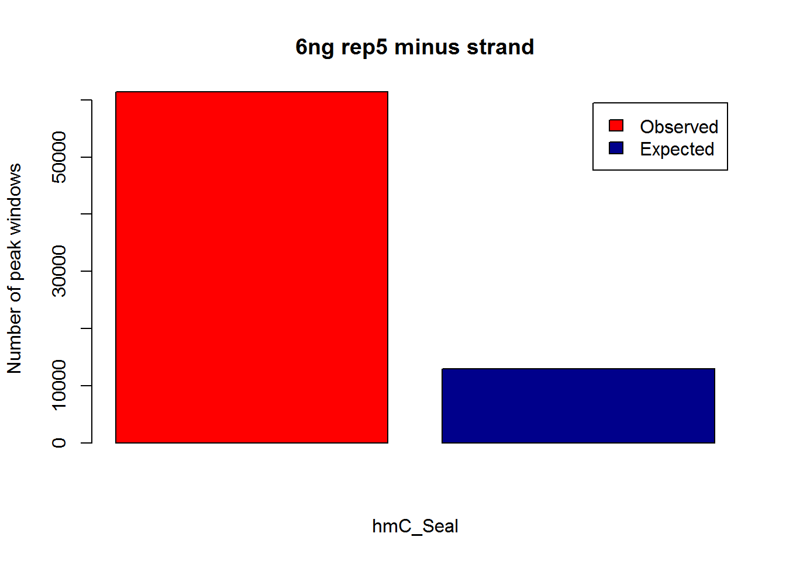
plus.48ng=read.table("D:\\ResearchWork\\StatisticalGenetics\\JumpSeq\\JumpSeq-project\\data\\center_three_jump\\48ng_11rep_merge.sorted_GSM882244_FDR_0.0484_tt_plus_with_1_coverage.ave.perbase", header=F)
minus.48ng=read.table("D:\\ResearchWork\\StatisticalGenetics\\JumpSeq\\JumpSeq-project\\data\\center_three_jump\\48ng_11rep_merge.sorted_GSM882244_FDR_0.0484_tt_minus_with_1_coverage.ave.perbase", header=F)
par(mfrow=c(1,2), oma = c(0, 0, 2, 0))
plot(seq(-10, 10, by=1)+1,plus.48ng[91:111,1], type="l", ylab="coverage", xlab="Distance", main="plus")
abline(v=0, col=2)
plot(seq(-10, 10, by=1)-1,minus.48ng[91:111,1], type="l", ylab="coverage", xlab="Distance", main="minus")
abline(v=0, col=2)
mtext("***tC/Gt***-11rep", outer = TRUE, cex = 1)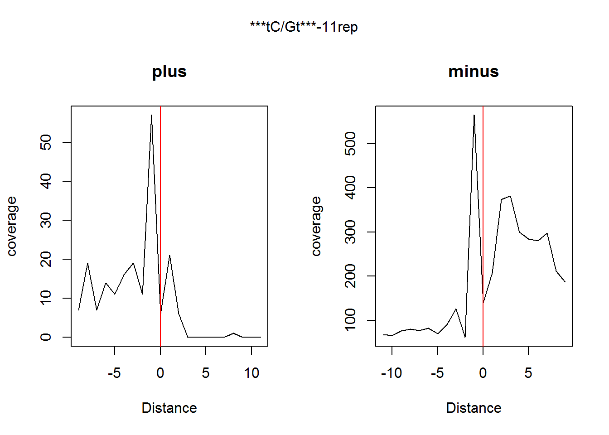
Put all these 16 jump distributions together and plot them.
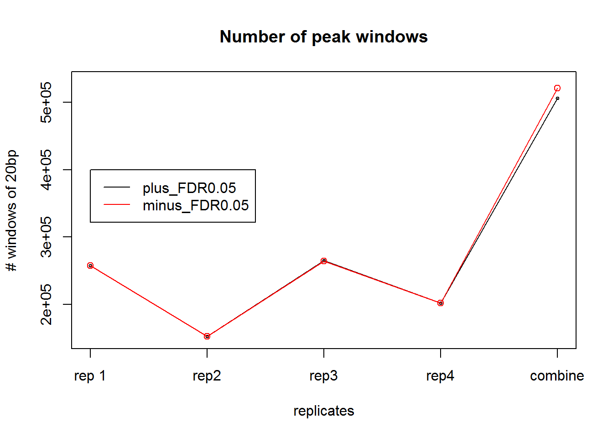
Two sample Kolmogorov-Smirnov Tests: test if any two jump distributions are from the same distribution or not. First standardize the data.
| – | aca | acc | acg | act | cca | ccc | ccg | cct |
|---|---|---|---|---|---|---|---|---|
| aca | ||||||||
| acc | 0.403(1.3e-14) | |||||||
| acg | 0.2836(1.91e-7) | 0.393(6.5e-14) | ||||||
| act | 0.3781(6.6e-13) | 0.1194(0.1139) | 0.3632(6.1e-12) | |||||
| cca | 0.0995(0.2727) | 0.3632(6.1e-12) | 0.2438(1.3e-5) | 0.3234(1.5e-9) | ||||
| ccc | 0.4279(2.2e-16) | 0.0896(0.3957) | 0.398(2.98e-14) | 0.1542(0.0168) | 0.3582(1.3e-11) | |||
| ccg | 0.2935(6e-8) | 0.393(6.5e-14) | 0.0597(0.8663) | 0.3781(6.6e-13) | 0.3532(2.6e-11) | 0.4(2.98e-14) | ||
| cct | 0.4129(2.5e-15) | 0.1493(0.0227) | 0.4378(<2.2e-16) | 0.1294(0.0693) | 0.9552(<2.2e-16) | 0.1(0.22) | 0.4(<2.2e-16) | |
| gca | 0.1791(0.0032) | 0.3582(1.3e-11) | 0.2687(1e-6) | 0.3134(5.3e-9) | 0.4726(<2.2e-16) | 0.29(6e-8) | 0.3(1e-7) | 0.3(3e-8) |
| gcc | 0.5473(2.2e-16) | 0.1592(0.0123) | 0.5522(<2.2e-16) | 0.2189(0.0001) | 0.9552(<2.2e-16) | 0.25(7.9e-6) | 0.6(<2.2e-16) | 0.2(0.0001) |
| gcg | 0.1343(0.0532) | 0.4876(<2.2e-16) | 0.2637(1.7e-6) | 0.4279(2.2e-16) | 0.1642(0.0089) | 0.42(4.4e-16) | 0.2(3e-5) | 0.5(<2.2e-16) |
| gct | 0.4328(<2.2e-16) | 0.1144(0.1438) | 0.3881(1.4e-13) | 0.1443(0.0305) | 0.3781(6.6e-13) | 0.18(0.002) | 0.4(1e-13) | 0.2(0.002) |
| tca | 0.1642(0.0089) | 0.3234(1.5e-9) | 0.2388(2.1e-5) | 0.2687(1e-6) | 0.15(0.02) | 0.32(1.5e-9) | 0.2(3e-5) | 0.3(3e-8) |
| tcc | 0.5224(<2.2e-16) | 0.204(0.0005) | 0.4776(<2.2e-16) | 0.2438(1.3e-5) | 0.47(<2.2e-16) | 0.17(0.0045) | 0.5(<2e-16) | 0.2(3e-5) |
| tcg | 0.2537(4.8e-6) | 0.4677(<2.2e-16) | 0.1443(0.0305) | 0.4279(2.2e-16) | 0.22(0.0001) | 0.4(2.9e-14) | 0.2(0.02) | 0.5(<2e-16) |
| tct | 0.5025(<2.2e-16) | 0.1443(0.0305) | 0.4179(1.1e-15) | 0.1791(0.0032) | 0.44(<2.2e-16) | 0.2(0.0002) | 0.4(1e-15) | 0.2(0.005) |
| – | gca | gcc | gcg | gct | tca | tcc | tcg | tct |
|---|---|---|---|---|---|---|---|---|
| gca | ||||||||
| gcc | 0.5(<2.2e-16) | |||||||
| gcg | 0.2(3e-5) | 0.6(<2.2e-16) | ||||||
| gct | 0.4(6e-12) | 0.2(0.003) | 0.5(<2.2e-16) | |||||
| tca | 0.1(0.2) | 0.4(4e-16) | 0.2(0.0003) | 0.4(1e-11) | ||||
| tcc | 0.4(<2.2e-16) | 0.1(0.04) | 0.5(<2.2e-16) | 0.1(0.02) | 0.4(<2.2e-16) | |||
| tcg | 0.2(2e-5) | 0.6(<2.2e-16) | 0.2(0.0005) | 0.4(1e-13) | 0.2(0.0003) | 0.5(<2.2e-16) | ||
| tct | 0.4(3e-14) | 0.1(0.05) | 0.6(<2.2e-16) | 0.2(0.0001) | 0.4(3e-14) | 0.2(0.003) | 0.5(<2.2e-16) |
- this is only for combing 11 replicates plus strand.
- most pair whose p values are large to be not significant (>0.05) have the same base after 5hmC base
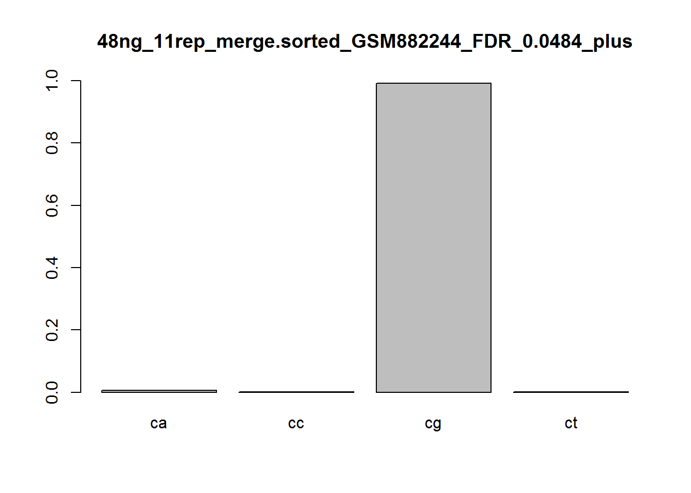 This figure shows the ratio of reads within 20 bp window in the center with the center site being ca, cc, cg, ct, in plus strand. Obviously, over 99% reads are generated from the window with cg in the center.
Investigate the number of CA, CC, CG, CT’s in the peak windows.
total=matrix(nrow=4, ncol=1)
total[,1]=c(2936943, 2318330, 2135195, 3507124)/sum(c(2936943, 2318330, 2135195, 3507124))
rownames(total)=c("CA", "CC", "CG", "CT")
barplot(total[,1]/sum(total[,1]), ylim=c(0,0.5), main="48ng_11rep_merge.minus.FDR0.05.corrected")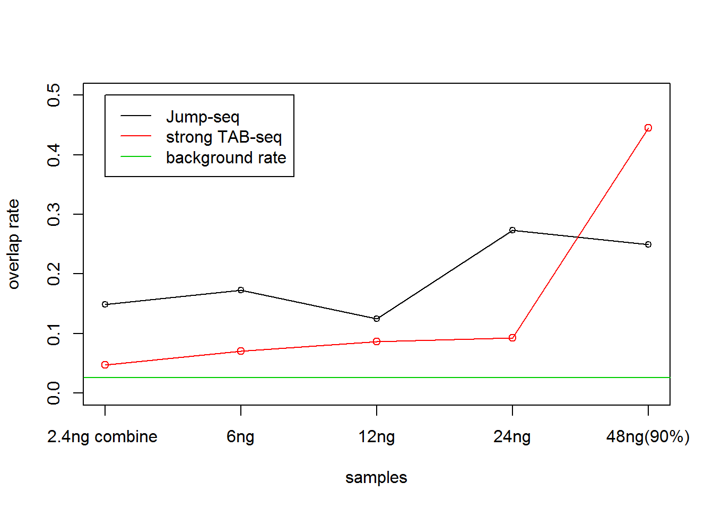
reads depletion
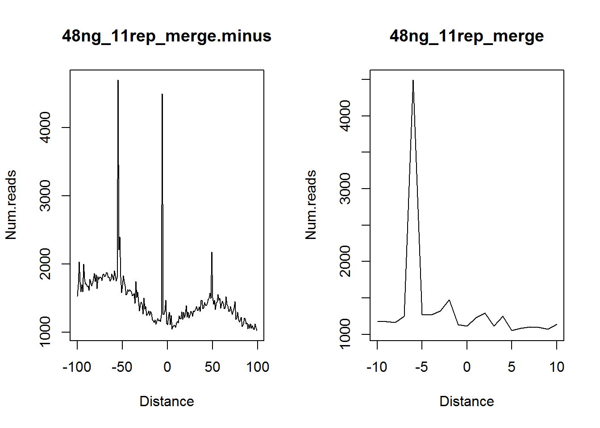
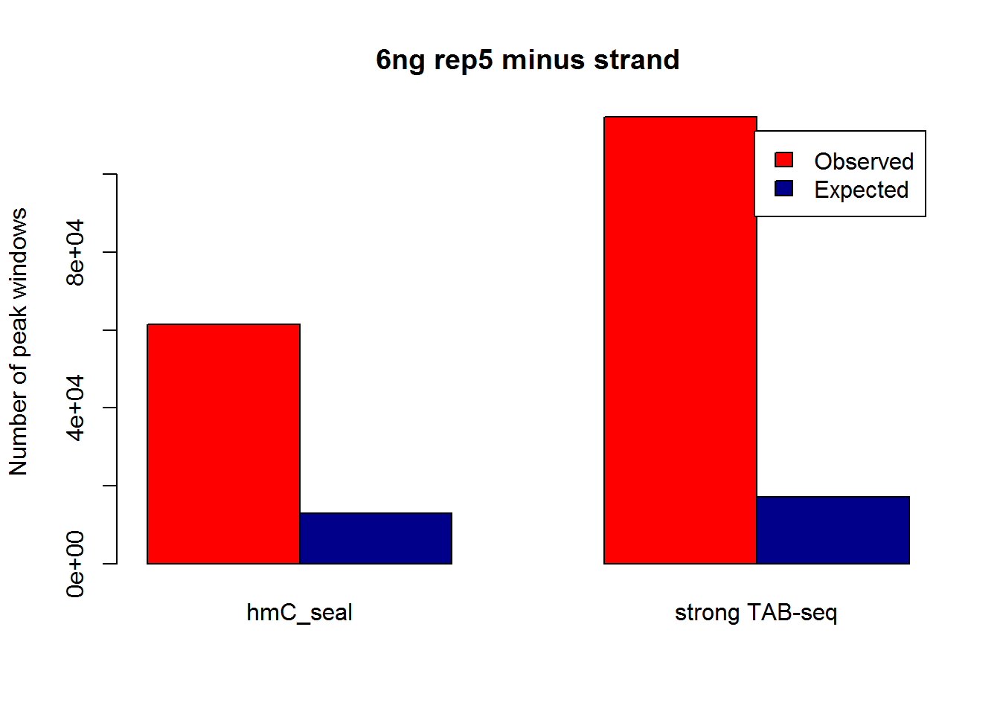
enrichment at cis-regulatory regions
Combine 11 48ng replicates together and look at plus and minus strand.
percent=matrix(nrow=2, ncol=5)
percent[,1]=c(0.0070, 0.0032)
percent[,2]=c(0.0139, 0.0034)
percent[,3]=c(0.0069, 0.0026)
percent[,4]=c(0.0042, 0.0021)
percent[,5]=c(0.0005, 0.0011)
colnames(percent)=c("ctcf", "enhancer", "h3k27ac", "h3k4me3", "polII")
barplot(percent, beside=T, col=c("red", "darkblue"), legend=c("Jump-seq peaks", "Random windows"), ylim=c(0,0.02),
ylab="Proportion of Jump-seq windows", main="combine 11 48ng replicates minus (FDR0.05)", xlab="", cex.names=1)
text(2, 0.0075, "2.21(p<2.2e-16)")
text(5, 0.0145, "3.87(p<2.2e-16)")
text(8, 0.0075, "2.60(p<2.2e-16)")
text(11, 0.005, "1.99(p<2.2e-16)")
text(14, 0.0015, "0.46 (p=1)")
percent=matrix(nrow=2, ncol=5)
percent[,1]=c(0.0068, 0.0032)
percent[,2]=c(0.0139, 0.0034)
percent[,3]=c(0.0070, 0.0026)
percent[,4]=c(0.0042, 0.0021)
percent[,5]=c(0.0006, 0.0011)
colnames(percent)=c("ctcf", "enhancer", "h3k27ac", "h3k4me3", "polII")
barplot(percent, beside=T, col=c("red", "darkblue"), legend=c("Jump-seq peaks", "Random windows"), ylim=c(0,0.02),
ylab="Proportion of Jump-seq windows", main="combine 11 48ng replicates plus (FDR0.05)", xlab="", cex.names=1)
text(2, 0.0075, "2.21(p<2.2e-16)")
text(5, 0.0145, "3.95(p<2.2e-16)")
text(8, 0.0075, "2.60(p<2.2e-16)")
text(11, 0.005, "1.99(p<2.2e-16)")
text(14, 0.0015, "0.49 (p=1)")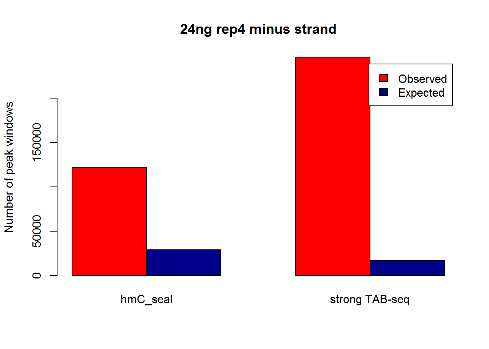
We combined eleven 48ng replicates, called peak windows of 20 bp, selecetd 20 bp windows with FDR 0.05. We randomly selected same amount of 20 bp windows as the chosen windows in the whole genome. The proportion of chosen peak windows (red) and randon windows (blue) overlapping with different regions are calculated and the corresponding enrichments are shown above the red bar
peak distribution

The peaks are from combined data of 11 48ng replicates of plus strand at FDR0.05.
Each peak window is counted once, start from CTCF, then enhancer, h3k27ac, h3k5me3, PoIII. For example, first count how many peak windows are overlaping with CTCF, then exclude these overlapped windows, use the rest to overlap with enhancer, and so on.
all these peaks overlapping with those regions only take about 3% of all peaks called.
24ng 5hmC replicate
There are 5 24ng 5hmC replicates.
| rep | plus | minus |
|---|---|---|
| rep 1 | 3,613,864 | 3,621,005 |
| rep 2 | 2,654,892 | 2,660,120 |
| rep 3 | 4,634,559 | 4,645,750 |
| rep 4 | 1,846,242 | 1,853,346 |
| rep 5 | 5,072,002 | 5,085,060 |
win.minus=c(255946, 1255527, 498618, 1474825, 555722)
win.plus=c(255426, 1262831, 499772, 1481412, 555236)
plot(win.minus, type="o", xaxt='n', xlab="replicates", ylab="Number of peak windows", col=1, main="Number of peak windows (20bp, FDR0.05)", cex=0.8)
lines(win.plus, col=2, type="o")
legend(1, 1500000, c("minus strand", "plus strand"), col=c(1,2), lty=c(1,1))
axis.labels <-c("rep1 ", "rep2", "rep3", "rep4", "rep5")
axis(1, at=seq(1,5), labels=axis.labels)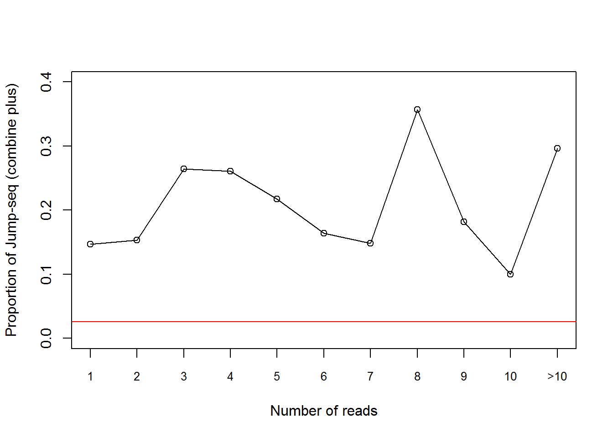
Comparison with Dali’s peaks
jump.rate.minus=c(0.1248, 0.0639, 0.1255, 0.0829, 0.1264)
jump.rate.plus=c(0.1254, 0.0646, 0.1258, 0.0833, 0.1265)
dali.rate.minus=c(0.3455, 0.6132, 0.5248, 0.7351, 0.5625)
dali.rate.plus=c(0.3465, 0.6181, 0.5281, 0.7390, 0.5610)
plot(jump.rate.minus, ylim=c(0, 1), type="o", xaxt='n', xlab="number of reads", ylab="overlapping rate", col=1, main="Overlapping rate of peak windows of 20 bp (FDR0.05) with Dali's peaks", cex=0.8)
lines(jump.rate.plus, col=2, type="o")
lines(dali.rate.minus, col=3, type="o")
lines(dali.rate.plus, col=4, type="o")
legend(1, 1, c("jump.rate.minus", "jump.rate.plus", "dali.rate.minus", "dali.rate.plus"), col=c(1,2,3,4), lty=c(1,1,1,1))
axis.labels <-c("rep1", "rep2", "rep3", "rep4", "rep5")
axis(1, at=seq(1,5), labels=axis.labels)
Comparison with strong TAB-seq
jump.rate.minus=c(0.2610, 0.1230, 0.2865, 0.1672, 0.2730)
jump.rate.plus=c(0.2612, 0.1234, 0.2891, 0.1686, 0.2734)
TAB.rate.minus=c(0.0422, 0.0905, 0.0881, 0.1437, 0.0930)
TAB.rate.plus=c(0.0421, 0.0913, 0.0894, 0.1458, 0.0932)
plot(jump.rate.minus, ylim=c(0, 0.6), type="o", xaxt='n', xlab="number of reads", ylab="overlapping rate", col=1, main="Overlapping rate of peak windows (20bp,FDR0.05) with strong TAB-seq peaks", cex.main=0.9)
lines(jump.rate.plus, col=2, type="o")
lines(TAB.rate.minus, col=3, type="o")
lines(TAB.rate.plus, col=4, type="o")
legend(1, 0.6, c("jump.rate.minus", "jump.rate.plus", "StrongTAB.rate.minus", "StrongTAB.rate.plus"), col=c(1,2,3,4), lty=c(1,1,1,1))
axis.labels <-c("rep1", "rep2", "rep3", "rep4", "rep5")
axis(1, at=seq(1,5), labels=axis.labels)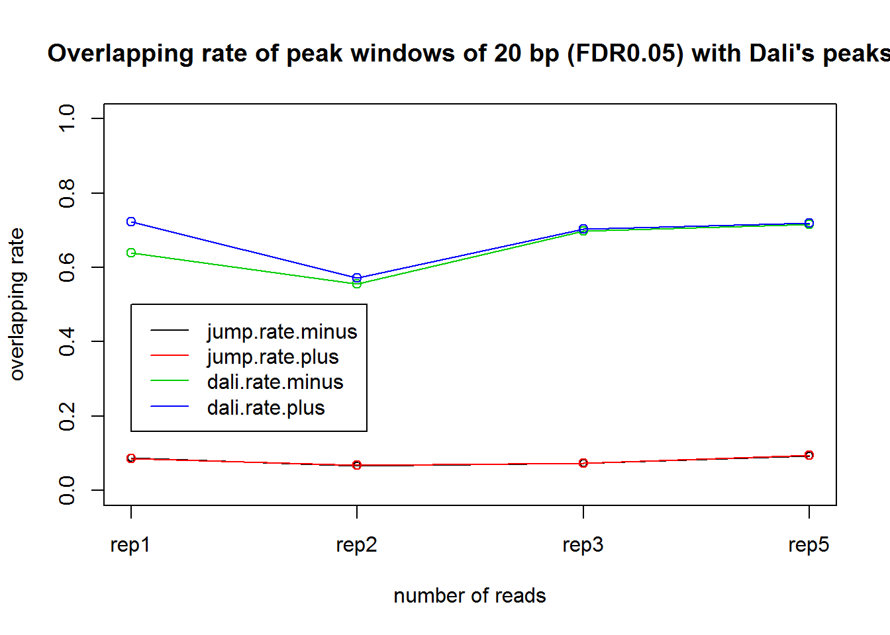
enrichment-rep4 minus
count=matrix(nrow=2, ncol=2)
count[,1]=c(122190, 29091)
count[,2]=1474825-count[,1]
barplot(count[,1], beside=F, col=c("red", "darkblue"), legend=c("Observed", "Expected"), xlab="hmC_Seal", main="24ng rep4 minus strand", ylab="Number of peak windows")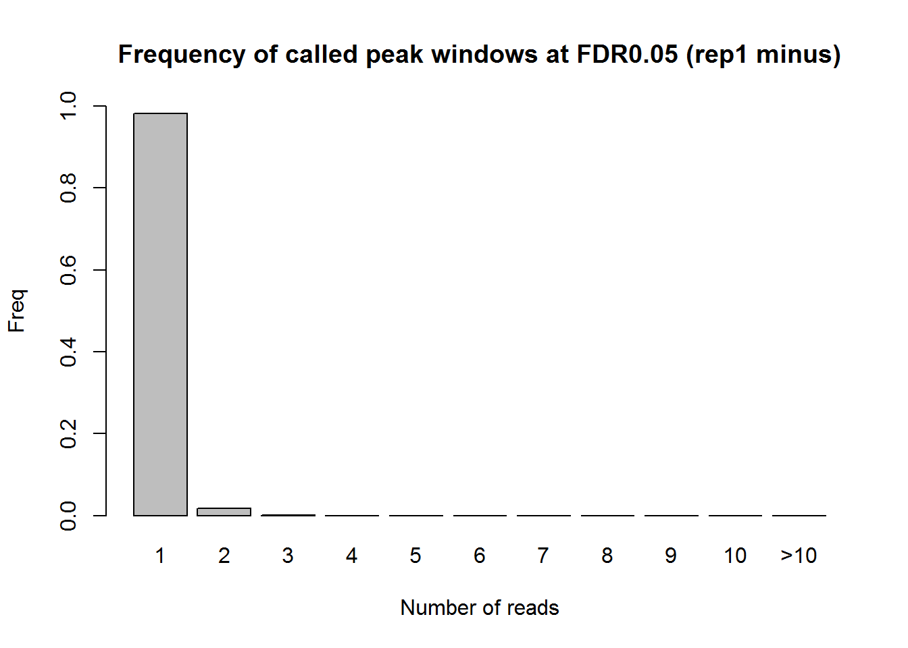
count=matrix(nrow=2, ncol=2)
count[,1]=c(246529, 17073)
count[,2]=1474825-count[,1]
barplot(count[,1], beside=F, col=c("red", "darkblue"), legend=c("Observed", "Expected"), xlab="strong TAB-seq", main="24ng rep4 minus strand", ylab="Number of peak windows")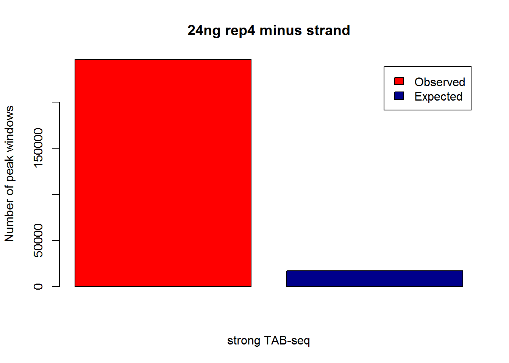
12ng 5hmC replicate
There are 5 12ng 5hmC replicates.
| rep | plus | minus |
|---|---|---|
| rep 1 | 1,538,440 | 1,543,973 |
| rep 2 | 2,817,848 | 2,829,593 |
| rep 3 | 1,805,014 | 1,813,743 |
| rep 4 | 1,962,631 | 1,976,519 |
| rep 5 | 1,365,146 | 1,375,074 |
win.minus=c(1144297, 1008422, 1436959, 1197291)
win.plus=c(1312102, 1036507, 1441863, 1200396)
plot(win.minus, type="o", xaxt='n', xlab="replicates", ylab="Number of peak windows", col=1, main="Number of peak windows (20bp, FDR0.05)", cex=0.8)
lines(win.plus, col=2, type="o")
legend(1, 1420000, c("minus strand", "plus strand"), col=c(1,2), lty=c(1,1))
axis.labels <-c("rep1 ", "rep2", "rep3", "rep5")
axis(1, at=seq(1,4), labels=axis.labels)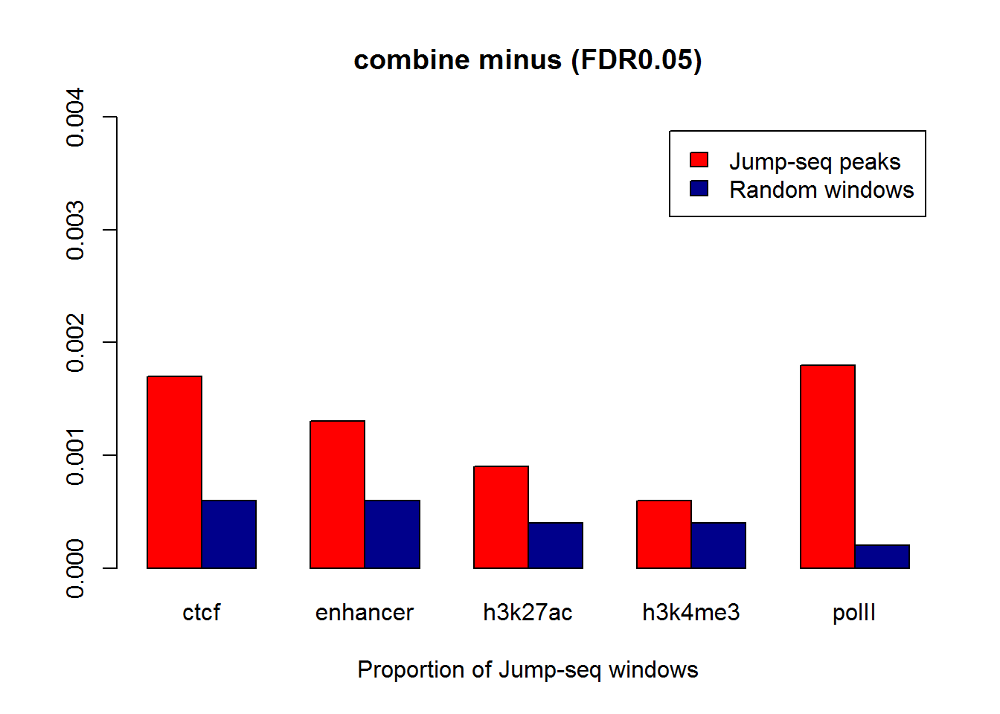
Comparison with Dali’s peaks
jump.rate.minus=c(0.0876, 0.0665, 0.0734, 0.0933)
jump.rate.plus=c(0.0858, 0.0672, 0.0734, 0.0938)
dali.rate.minus=c(0.6385, 0.5558, 0.6989, 0.7158)
dali.rate.plus=c(0.7222, 0.5711, 0.7026, 0.7202)
plot(jump.rate.minus, ylim=c(0, 1), type="o", xaxt='n', xlab="number of reads", ylab="overlapping rate", col=1, main="Overlapping rate of peak windows of 20 bp (FDR0.05) with Dali's peaks", cex=0.8)
lines(jump.rate.plus, col=2, type="o")
lines(dali.rate.minus, col=3, type="o")
lines(dali.rate.plus, col=4, type="o")
legend(1, 0.5, c("jump.rate.minus", "jump.rate.plus", "dali.rate.minus", "dali.rate.plus"), col=c(1,2,3,4), lty=c(1,1,1,1))
axis.labels <-c("rep1", "rep2", "rep3", "rep5")
axis(1, at=seq(1,4), labels=axis.labels)
Comparison with strong TAB-seq
jump.rate.minus=c(0.1182, 0.0822, 0.0932, 0.1250)
jump.rate.plus=c(0.1180, 0.0826, 0.0933, 0.1254)
TAB.rate.minus=c(0.0776, 0.0472, 0.0765, 0.0861)
TAB.rate.plus=c(0.0888, 0.0487, 0.0767,0.0865)
plot(jump.rate.minus, ylim=c(0, 0.4), type="o", xaxt='n', xlab="number of reads", ylab="overlapping rate", col=1, main="Overlapping rate of peak windows (20bp,FDR0.05) with strong TAB-seq peaks", cex.main=0.9)
lines(jump.rate.plus, col=2, type="o")
lines(TAB.rate.minus, col=3, type="o")
lines(TAB.rate.plus, col=4, type="o")
legend(1, 0.4, c("jump.rate.minus", "jump.rate.plus", "StrongTAB.rate.minus", "StrongTAB.rate.plus"), col=c(1,2,3,4), lty=c(1,1,1,1))
axis.labels <-c("rep1", "rep2", "rep3", "rep5")
axis(1, at=seq(1,4), labels=axis.labels)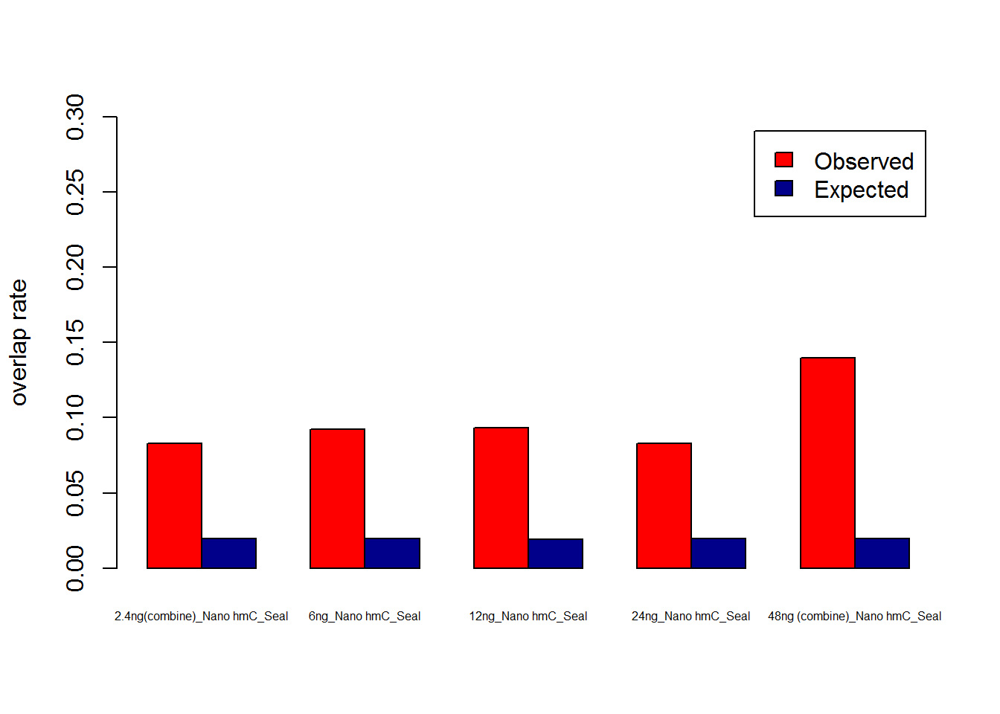
enrichment-rep 5 minus strand
count=matrix(nrow=2, ncol=2)
count[,1]=c(111734, 23171)
count[,2]=1197291-count[,1]
barplot(count[,1], beside=F, col=c("red", "darkblue"), legend=c("Observed", "Expected"), xlab="hmC_Seal", main="12ng rep5 minus strand", ylab="Number of peak windows")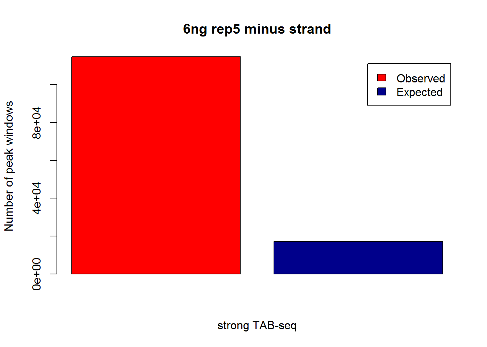
count=matrix(nrow=2, ncol=2)
count[,1]=c(149717, 31057)
count[,2]=1197291-count[,1]
barplot(count[,1], beside=F, col=c("red", "darkblue"), legend=c("Observed", "Expected"), xlab="strong TAB-seq", main="12ng rep5 minus strand", ylab="Number of peak windows")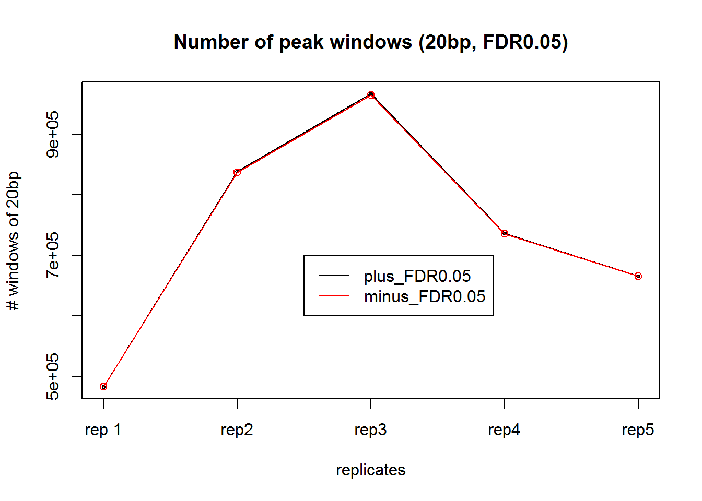
6ng 5hmC replicate
reads distribution
reads=matrix(nrow=11, ncol=1)
rownames(reads)=c(seq(1,10), ">10"); reads[,1]=c(473607, 8448, 370, 60, 30, 13, 8, 7, 5, 6, 94)
barplot(reads[,1]/sum(reads[,1]), ylim=c(0,1), ylab="Freq", main="Frequency of called peak windows at FDR0.05 (rep1 minus)", xlab="Number of reads")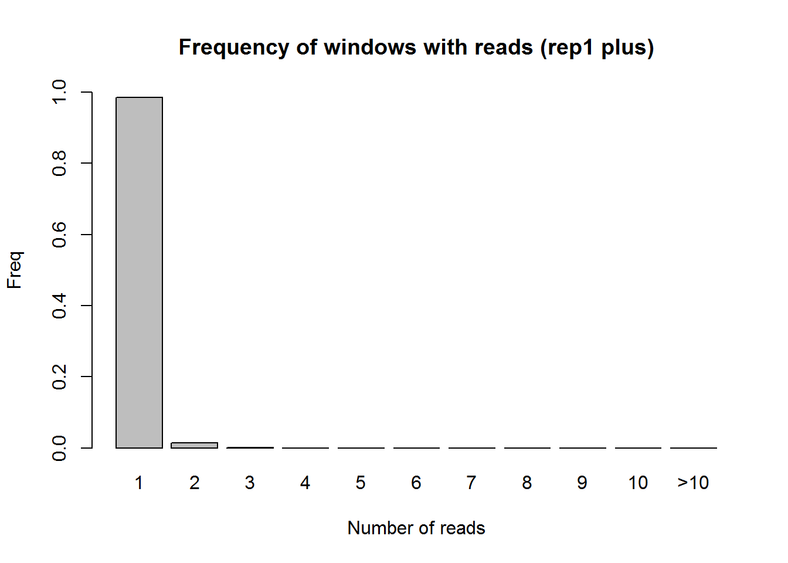
There are 5 6ng 5hmC replicates.
| rep | plus | minus |
|---|---|---|
| rep 1 | 506,562 | 510,127 |
| rep 2 | 900,135 | 902,501 |
| rep 3 | 1,049,521 | 1,051,758 |
| rep 4 | 785,990 | 792,942 |
| rep 5 | 705,891 | 713,330 |
win.plus=c(482648, 838387, 966623, 736000, 665408)
win.minus=c(482398, 836889, 964130, 735655, 665737)
plot(win.plus, type="o", xaxt='n', xlab="replicates", ylab="# windows of 20bp", col=1, main="Number of peak windows (20bp, FDR0.05)", cex=0.5)
lines(win.minus, col=2, type="o")
legend(2.5, 700000, c("plus_FDR0.05", "minus_FDR0.05"), col=c(1,2), lty=c(1,1))
axis.labels <-c("rep 1", "rep2", "rep3", "rep4", "rep5")
axis(1, at=seq(1,5), labels=axis.labels)
Comparison with Dali’s peaks
jump.rate.minus=c(0.0934, 0.0771, 0.0764, 0.0917, 0.0922)
jump.rate.plus=c(0.0926, 0.0773, 0.0765, 0.0913, 0.0920)
dali.rate.minus=c(0.4538, 0.5586, 0.5996, 0.5753, 0.5469)
dali.rate.plus=c(0.4523, 0.5612, 0.6015, 0.5719, 0.5444)
plot(jump.rate.minus, ylim=c(0, 1), type="o", xaxt='n', xlab="number of reads", ylab="overlapping rate", col=1, main="Overlapping rate of peak windows of 20 bp (FDR0.05) with Dali's peaks", cex=0.8)
lines(jump.rate.plus, col=2, type="o")
lines(dali.rate.minus, col=3, type="o")
lines(dali.rate.plus, col=4, type="o")
legend(1, 1, c("jump.rate.minus", "jump.rate.plus", "dali.rate.minus", "dali.rate.plus"), col=c(1,2,3,4), lty=c(1,1,1,1))
axis.labels <-c("rep1", "rep2", "rep3", "rep4", "rep5")
axis(1, at=seq(1,5), labels=axis.labels)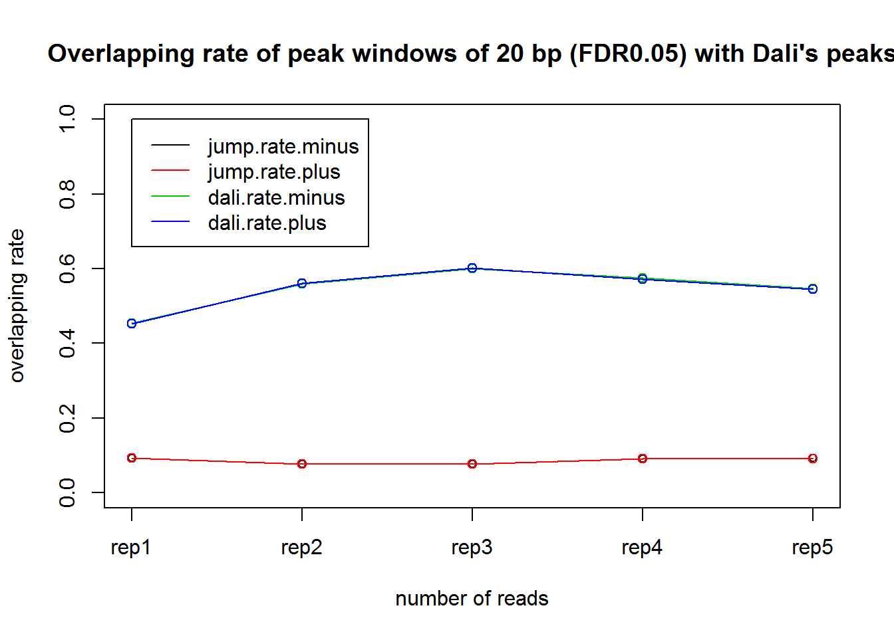
Comparison with strong TAB-seq
jump.rate.minus=c(0.1653, 0.1413, 0.1411, 0.1720, 0.1724)
jump.rate.plus=c(0.1657, 0.1410, 0.1409, 0.1721, 0.1723)
TAB.rate.minus=c(0.0492, 0.0715, 0.0818, 0.0771, 0.0704)
TAB.rate.plus=c(0.0492, 0.0715, 0.0820, 0.0769, 0.0699)
plot(jump.rate.minus, ylim=c(0, 0.6), type="o", xaxt='n', xlab="number of reads", ylab="overlapping rate", col=1, main="Overlapping rate of peak windows (20bp,FDR0.05) with strong TAB-seq peaks", cex.main=0.9)
lines(jump.rate.plus, col=2, type="o")
lines(TAB.rate.minus, col=3, type="o")
lines(TAB.rate.plus, col=4, type="o")
legend(1, 0.6, c("jump.rate.minus", "jump.rate.plus", "StrongTAB.rate.minus", "StrongTAB.rate.plus"), col=c(1,2,3,4), lty=c(1,1,1,1))
axis.labels <-c("rep1", "rep2", "rep3", "rep4", "combine")
axis(1, at=seq(1,5), labels=axis.labels)
enrichment-rep 5 minus strand
count=matrix(nrow=2, ncol=2)
count[,1]=c(61404, 12907)
count[,2]=665737-count[,1]
barplot(count[,1], beside=F, col=c("red", "darkblue"), legend=c("Observed", "Expected"), xlab="hmC_Seal", main="6ng rep5 minus strand", ylab="Number of peak windows")
count=matrix(nrow=2, ncol=2)
count[,1]=c(114794, 17049)
count[,2]=665737-count[,1]
barplot(count[,1], beside=F, col=c("red", "darkblue"), legend=c("Observed", "Expected"), xlab="strong TAB-seq", main="6ng rep5 minus strand", ylab="Number of peak windows")
2point4ng 5hmC replicate
| rep | plus | minus |
|---|---|---|
| rep 1 | 270,885 | 272,807 |
| rep 2 | 165,553 | 167,277 |
| rep 3 | 279,404 | 281,109 |
| rep 4 | 213,739 | 215,604 |
| combine | 929,581 | 926,797 |
win.plus2=c(257809, 152655, 264996, 202465, 505788) # FDR0.05 (~pvalue cutoff 0.01)
win.minus2=c(257918, 152853, 264218, 202051, 521062)
plot(win.plus2, type="o", ylim=c(150000, 530000), xaxt='n', xlab="replicates", ylab="# windows of 20bp", col=1, main="Number of peak windows", cex=0.5)
lines(win.minus2, col=2, type="o")
legend(1, 400000, c("plus_FDR0.05", "minus_FDR0.05"), col=c(1,2), lty=c(1,1))
axis.labels <-c("rep 1", "rep2", "rep3", "rep4", "combine")
axis(1, at=seq(1,5), labels=axis.labels)
Reads distribution
reads.plus=matrix(nrow=11, ncol=1)
rownames(reads.plus)=c(seq(1,10), ">10"); reads.plus[,1]=c(253804, 3709, 159, 31, 16, 11, 1, 6, 7, 4, 61)
barplot(reads.plus[,1]/sum(reads.plus[,1]), ylim=c(0,1), ylab="Freq", main="Frequency of windows with reads (rep1 plus)", xlab="Number of reads")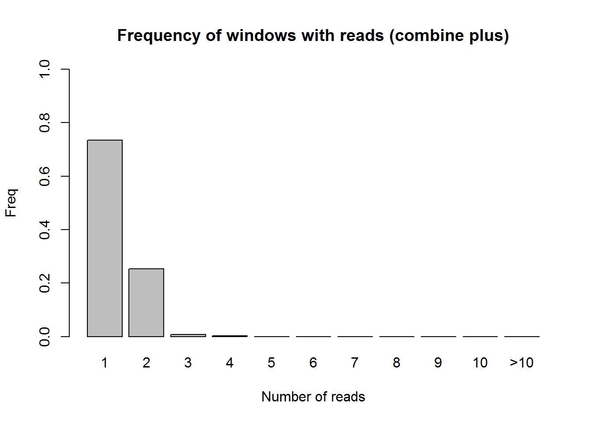
reads.plus=matrix(nrow=11, ncol=1)
rownames(reads.plus)=c(seq(1,10), ">10"); reads.plus[,1]=c(371791, 128383, 4260, 985, 115, 67, 27, 14, 11, 10, 125)
barplot(reads.plus[,1]/sum(reads.plus[,1]), ylim=c(0,1), ylab="Freq", main="Frequency of windows with reads (combine plus)", xlab="Number of reads")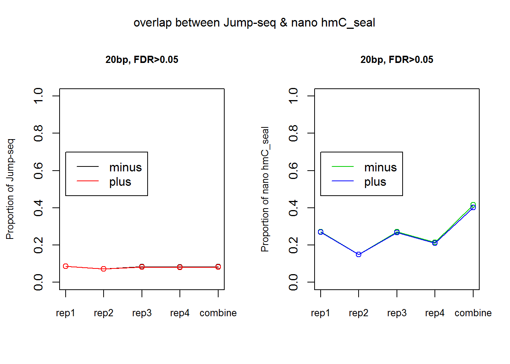
reads.minus=matrix(nrow=11, ncol=1)
rownames(reads.minus)=c(seq(1,10), ">10"); reads.minus[,1]=c(253875, 3720, 166, 31, 21, 8, 7, 3, 2, 3, 82)
barplot(reads.minus[,1]/sum(reads.minus[,1]), ylim=c(0,1), ylab="Freq", main="Frequency of called peak windows at FDR0.05 (rep1 minus)", xlab="Number of reads")
Comparison with Dali’s peaks
jump.rate.minus=c(0.0854, 0.0711, 0.0830, 0.0809, 0.0829)
jump.rate.plus=c(0.0852, 0.0713, 0.0818, 0.0793, 0.0822)
dali.rate.minus=c(0.2711, 0.1481, 0.2712, 0.2137, 0.4154)
dali.rate.plus=c(0.2692, 0.1490, 0.2674, 0.2093, 0.4014)
par(mfrow=c(1,2), oma = c(0, 0, 2, 0))
plot(jump.rate.minus, ylim=c(0, 1), type="o", xaxt='n', xlab="", ylab="Proportion of Jump-seq", col=1, main="20bp, FDR>0.05", cex.main=0.8, cex.lab=0.8)
lines(jump.rate.plus, col=2, type="o")
legend(1, 0.7, c("minus", "plus"), col=c(1,2), lty=c(1,1))
axis.labels <-c("rep1", "rep2", "rep3", "rep4", "combine")
axis(1, at=seq(1,5), labels=axis.labels, cex.axis=0.8)
plot(dali.rate.minus, ylim=c(0,1), type="o", xaxt='n', xlab="", ylab="Proportion of nano hmC_seal", col=3, main="20bp, FDR>0.05", cex.main=0.8, cex.lab=0.8)
lines(dali.rate.plus, col=4, type="o")
legend(1, 0.7, c("minus", "plus"), col=c(3,4), lty=c(1,1))
axis.labels <-c("rep1", "rep2", "rep3", "rep4", "combine")
axis(1, at=seq(1,5), labels=axis.labels, cex.axis=0.8)
mtext("overlap between Jump-seq & nano hmC_seal", outer = TRUE, cex = 1)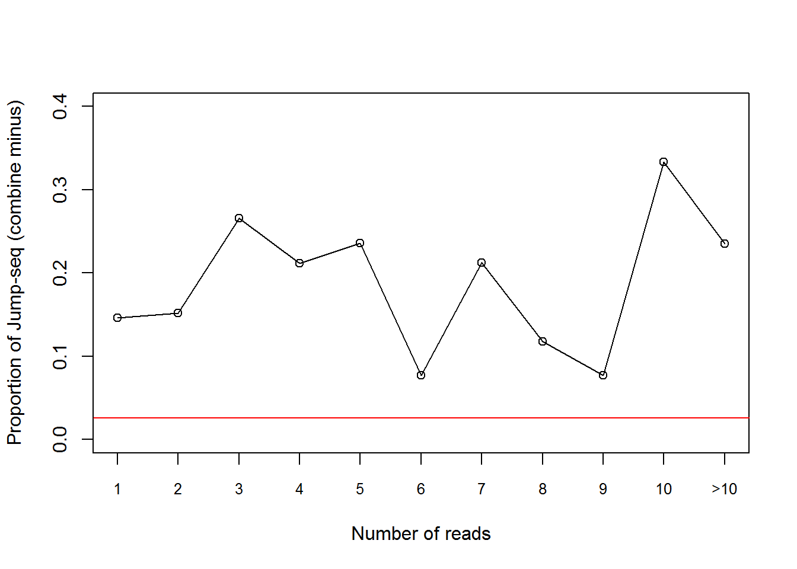
combine.minus=c(0.0818, 0.0840, 0.1435, 0.1059, 0.1000, 0.0641, 0.0606, 0.0588, 0, 0, 0)
plot(seq(1,11), combine.minus, type="o", xaxt='n', xlab="Number of reads", ylim=c(0, 0.2), ylab="Proportion of Jump-seq (combine minus)")
axis.labels <-c(seq(1,10), ">10")
abline(h=0.0194, col=2)
axis(1, at=seq(1,11), labels=axis.labels, cex.axis=0.8)
- This is the enrichment of peak windows at different reads counts for combined 2.4ng replicates.
- This is not a good measure since the number of widnows with large number of reads usually is small, say 2 windows, the overlapping rate with nano hmc_seal is not so reliable, (with large variance).
- red line is background rate, 1.94%.
combine.plus=c(0.0814, 0.0828, 0.1254, 0.1289, 0.1478, 0.1045, 0.0741, 0, 0.0909, 0, 0.0080)
plot(seq(1,11), combine.plus, type="o", xaxt='n', xlab="Number of reads", ylim=c(0, 0.2), ylab="Proportion of Jump-seq (combine plus)")
axis.labels <-c(seq(1,10), ">10")
abline(h=0.0194, col=2)
axis(1, at=seq(1,11), labels=axis.labels, cex.axis=0.8)
Comparison with strong TAB-seq
jump.rate.minus=c(0.1543, 0.1295, 0.1544, 0.1483, 0.1489)
jump.rate.plus=c(0.1564, 0.1292, 0.1547, 0.1491, 0.1496)
TAB.rate.minus=c(0.0246, 0.0122, 0.0253, 0.0186, 0.0477)
TAB.rate.plus=c(0.0249, 0.0122, 0.0253, 0.0187, 0.0462)
par(mfrow=c(1,2), oma = c(0, 0, 2, 0))
plot(jump.rate.minus, ylim=c(0, 1), type="o", xaxt='n', xlab="", ylab="Proportion of Jump-seq", col=1, main="20bp, FDR>0.05", cex.main=0.8, cex.lab=0.8)
lines(jump.rate.plus, col=2, type="o")
legend(1, 0.7, c("minus", "plus"), col=c(1,2), lty=c(1,1))
axis.labels <-c("rep1", "rep2", "rep3", "rep4", "combine")
axis(1, at=seq(1,5), labels=axis.labels, cex.axis=0.8)
plot(TAB.rate.minus, ylim=c(0,1), type="o", xaxt='n', xlab="", ylab="Proportion of TAB-seq", col=3, main="20bp, FDR>0.05", cex.main=0.8, cex.lab=0.8)
lines(TAB.rate.plus, col=4, type="o")
legend(1, 0.7, c("minus", "plus"), col=c(3,4), lty=c(1,1))
axis.labels <-c("rep1", "rep2", "rep3", "rep4", "combine")
axis(1, at=seq(1,5), labels=axis.labels, cex.axis=0.8)
mtext("overlap between Jump-seq & TAB-seq", outer = TRUE, cex = 1)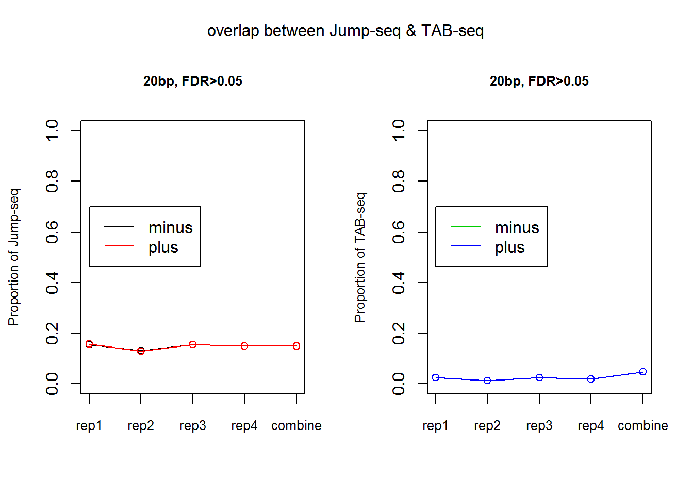
combine.minus=c(0.1462, 0.1519, 0.2660, 0.2118, 0.2357, 0.0769, 0.2121, 0.1176, 0.0769, 0.3333, 0.2349)
plot(seq(1,11), combine.minus, type="o", xaxt='n', xlab="Number of reads", ylim=c(0, 0.4), ylab="Proportion of Jump-seq (combine minus)")
axis.labels <-c(seq(1,10), ">10")
abline(h=0.0258, col=2)
axis(1, at=seq(1,11), labels=axis.labels, cex.axis=0.8)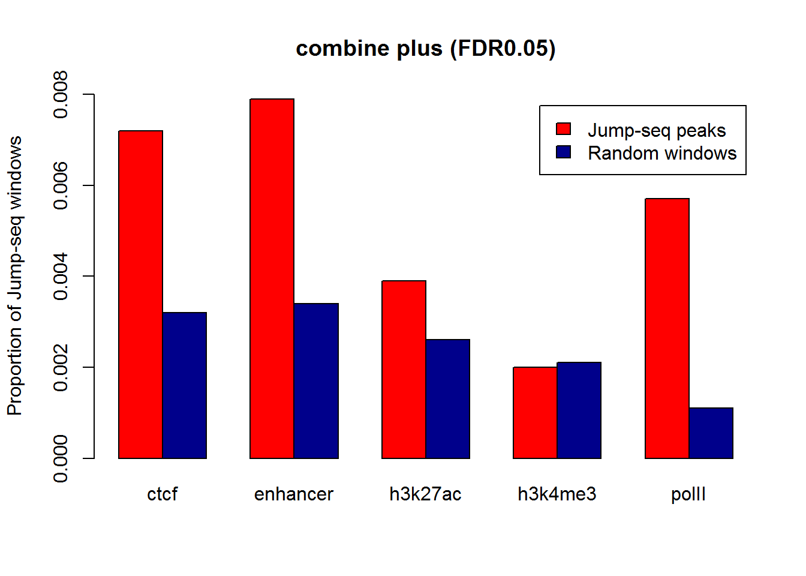
combine.plus=c(0.1466, 0.1532, 0.2643, 0.2609, 0.2174, 0.1642, 0.1481, 0.3571, 0.1818, 0.1000, 0.2960)
plot(seq(1,11), combine.plus, type="o", xaxt='n', xlab="Number of reads", ylim=c(0, 0.4), ylab="Proportion of Jump-seq (combine plus)")
axis.labels <-c(seq(1,10), ">10")
abline(h=0.0258, col=2)
axis(1, at=seq(1,11), labels=axis.labels, cex.axis=0.8)
enrichment-2.4ng combine minus strand
count1=matrix(nrow=2, ncol=2)
count1[,1]=c(43213, 10092)
count1[,2]=521062-count1[,1]
barplot(count1[,1], beside=F, col=c("red", "darkblue"), legend=c("Observed", "Expected"), xlab="hmC_Seal", main="2.4ng (combine)", ylab="Number of peak windows")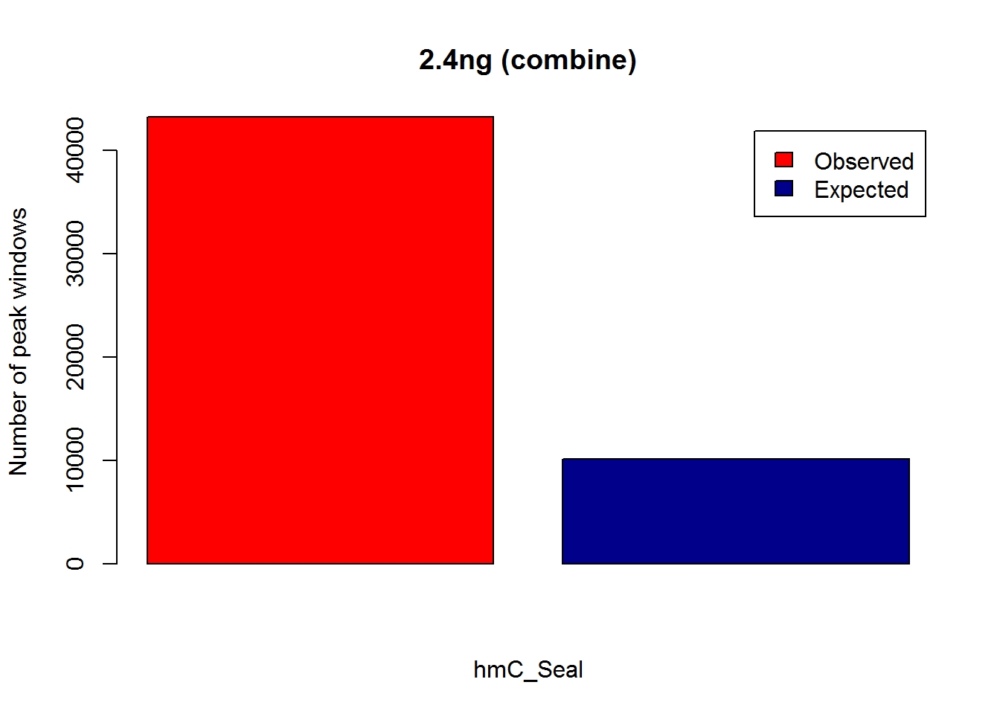
count2=matrix(nrow=2,ncol=2)
count2[,1]=c(98049, 13382)
count2[,2]=521062-count2[,1]
barplot(count2[,1], beside=F, col=c("red", "darkblue"), legend=c("Observed", "Expected"), xlab="strong TAB-seq", main="2.4ng (combine)", ylab="Number of peak windows")
jump distribution-2.4ng
minus.2.4ng=read.table("D:\\ResearchWork\\StatisticalGenetics\\JumpSeq\\JumpSeq-project\\data\\CHe-lu-2.4ng_mixed_with_other_library.mm9.umi_encoded_adaptor_removed_no_mismatch.sorted.dedup_GSM882244_FDR_0.0484_minus_with_1_coverage.ave.perbase", header=F)
par(mfrow=c(1,2), oma = c(0, 0, 2, 0))
plot(seq(-100, 100, by=1)-1,minus.2.4ng[,1], type="l", ylab="coverage", xlab="Distance", main="")
abline(v=0, col=2)
plot(seq(-10, 10, by=1)-1,minus.2.4ng[91:111,1], type="l", ylab="coverage", xlab="Distance", main="")
abline(v=0, col=2)
mtext("CHe-lu-2.4ng_mixed_with_other_library.minus", outer = TRUE, cex = 1)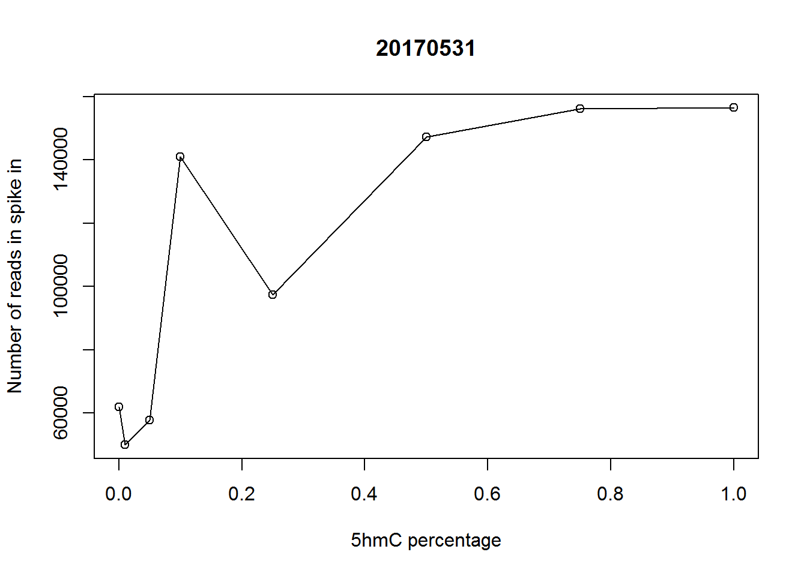
plus.2.4ng=read.table("D:\\ResearchWork\\StatisticalGenetics\\JumpSeq\\JumpSeq-project\\data\\CHe-lu-2.4ng_mixed_with_other_library.mm9.umi_encoded_adaptor_removed_no_mismatch.sorted.dedup_GSM882244_FDR_0.0484_plus_with_1_coverage.ave.perbase", header=F)
par(mfrow=c(1,2), oma = c(0, 0, 2, 0))
plot(seq(-100, 100, by=1)+1,plus.2.4ng[,1], type="l", ylab="coverage", xlab="Distance", main="")
abline(v=0, col=2)
plot(seq(-10, 10, by=1)+1,plus.2.4ng[91:111,1], type="l", ylab="coverage", xlab="Distance", main="")
abline(v=0, col=2)
mtext("CHe-lu-2.4ng_mixed_with_other_library.plus", outer = TRUE, cex = 1)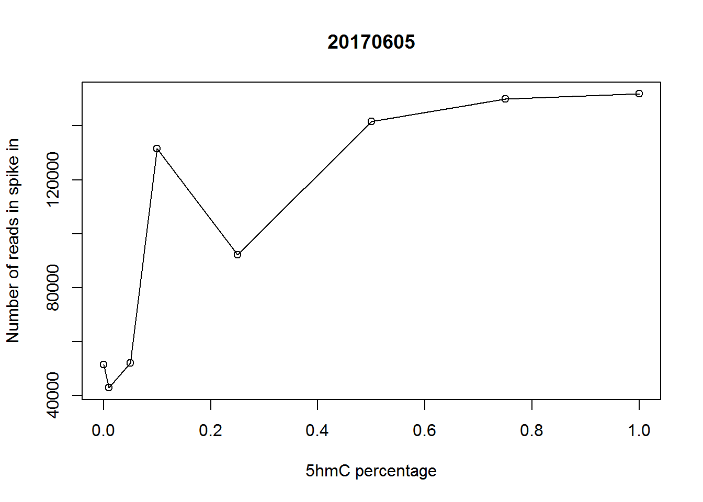
enrichment at cis-regulatory regions
download cis-regulatory peaks at Ren lab. They are sinlge base peaks and extended to 200 bp windows.
num.base=matrix(nrow=5, ncol=1)
rownames(num.base)=c("ctcf", "enhancer", "h3k27ac", "h3k4me3", "polII"); num.base[,1]=c(38714, 42477, 32109, 25911, 13398)
barplot(num.base[,1]/sum(num.base[,1]), ylab="Freq", main=" The ratio of peaks in different regions", xlab="")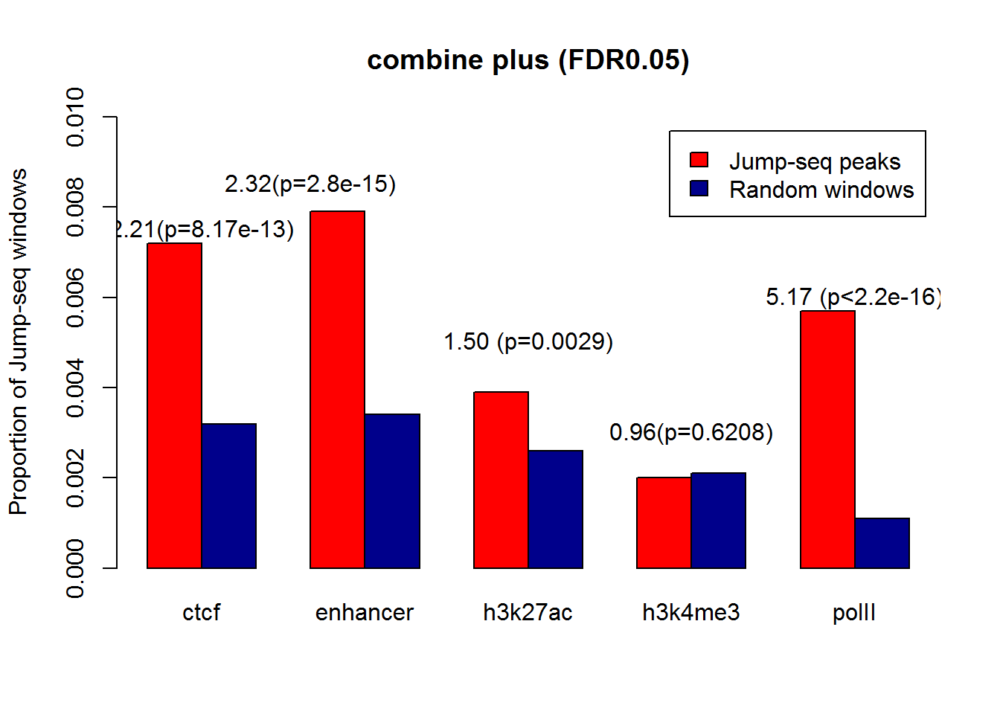
percent=matrix(nrow=2, ncol=5)
percent[,1]=c(0.0068, 0.0032)
percent[,2]=c(0.0082, 0.0034)
percent[,3]=c(0.0048, 0.0026)
percent[,4]=c(0.0028, 0.0021)
percent[,5]=c(0.0064, 0.0011)
colnames(percent)=c("ctcf", "enhancer", "h3k27ac", "h3k4me3", "polII")
barplot(percent, beside=T, col=c("red", "darkblue"), legend=c("Jump-seq peaks", "Random windows"), ylim=c(0,0.01),
ylab="Proportion of Jump-seq windows", main="combine minus (FDR0.05)", xlab="", cex.names=1)
text(2.1, 0.007, "2.11(p=1.99e-13)")
text(5, 0.0085, "2.40(p<2.2e-16)")
text(8, 0.005, "1.87(p=9.37e-8)")
text(11, 0.003, "1.33(p=0.0325)")
text(14, 0.0068, "5.77 (p<2.2e-16)")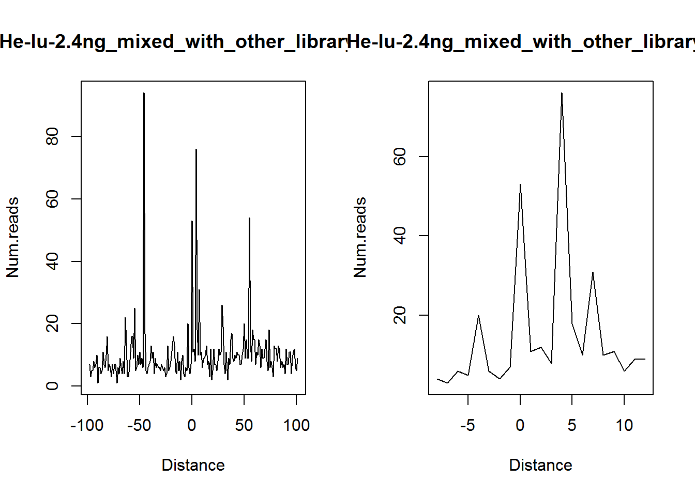
percent=matrix(nrow=2, ncol=5)
percent[,1]=c(0.0072, 0.0032)
percent[,2]=c(0.0079, 0.0034)
percent[,3]=c(0.0039, 0.0026)
percent[,4]=c(0.0020, 0.0021)
percent[,5]=c(0.0057, 0.0011)
colnames(percent)=c("ctcf", "enhancer", "h3k27ac", "h3k4me3", "polII")
barplot(percent, beside=T, col=c("red", "darkblue"), legend=c("Jump-seq peaks", "Random windows"), ylim=c(0,0.01),
ylab="Proportion of Jump-seq windows", main="combine plus (FDR0.05)", xlab="", cex.names=1)
text(2, 0.0075, "2.21(p=8.17e-13)")
text(4, 0.0085, "2.32(p=2.8e-15)")
text(8, 0.005, "1.50 (p=0.0029)")
text(11, 0.003, "0.96(p=0.6208)")
text(14, 0.006, "5.17 (p<2.2e-16)")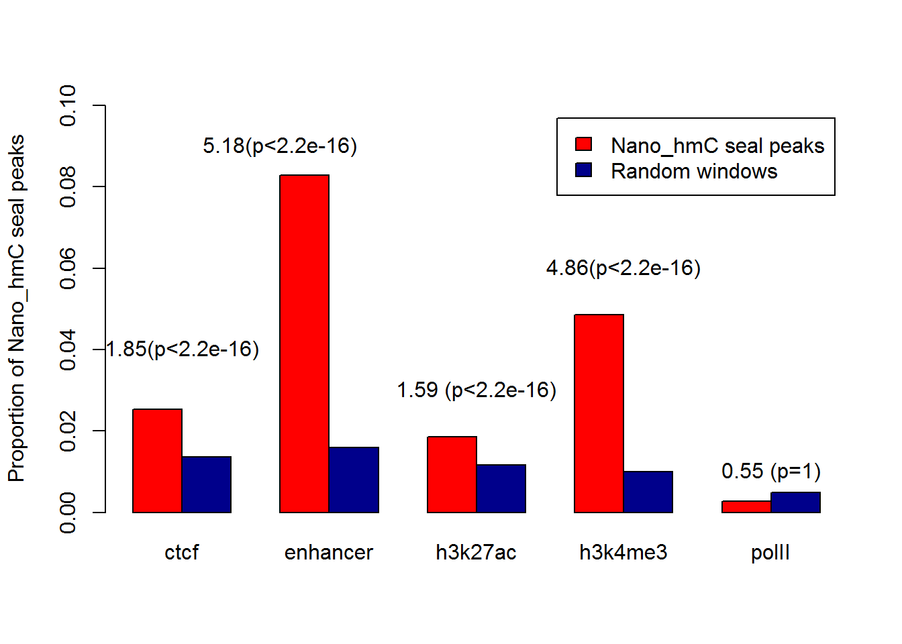
percent=matrix(nrow=2, ncol=5)
percent[,1]=c(0.0053, 0.0032)
percent[,2]=c(0.0084, 0.0035)
percent[,3]=c(0.0053, 0.0026)
percent[,4]=c(0.0036, 0.0021)
percent[,5]=c(0.0010, 0.0012)
colnames(percent)=c("ctcf", "enhancer", "h3k27ac", "h3k4me3", "polII")
barplot(percent, beside=T, col=c("red", "darkblue"), legend=c("Jump-seq peaks", "Random windows"), ylim=c(0,0.01),
ylab="Proportion of Jump-seq windows", xlab="", cex.names=1, main="combine minus (one reads window)")
# do one side "greater" fisher exact test
text(2, 0.006, "1.67(p<2.2e-16)")
text(4, 0.009, "2.40(p<2.2e-16)")
text(8, 0.006, "2.02 (p<2.2e-16)")
text(11, 0.004, "1.71(p<2.2e-16)")
text(14, 0.0015, "0.89 (p=0.9776)")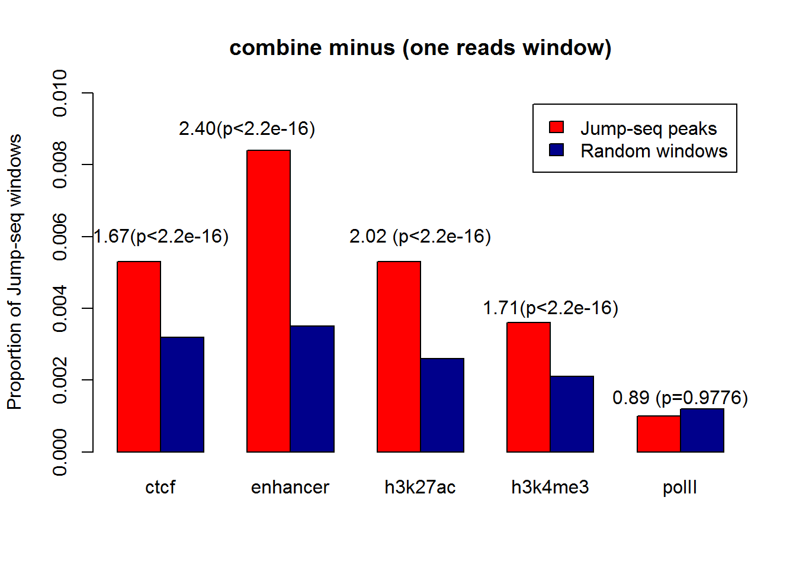
percent=matrix(nrow=2, ncol=5)
percent[,1]=c(0.0254, 0.0137)
percent[,2]=c(0.0829, 0.0160)
percent[,3]=c(0.0186, 0.0117)
percent[,4]=c(0.0486, 0.0100)
percent[,5]=c(0.0027, 0.0049)
colnames(percent)=c("ctcf", "enhancer", "h3k27ac", "h3k4me3", "polII")
barplot(percent, beside=T, col=c("red", "darkblue"), legend=c("Nano_hmC seal peaks", "Random windows"), ylim=c(0,0.1),
ylab="Proportion of Nano_hmC seal peaks", main="", xlab="", cex.names=1)
# do one side "greater" fisher exact test
text(2, 0.04, "1.85(p<2.2e-16)")
text(4, 0.09, "5.18(p<2.2e-16)")
text(8, 0.03, "1.59 (p<2.2e-16)")
text(11, 0.06, "4.86(p<2.2e-16)")
text(14, 0.01, "0.55 (p=1)")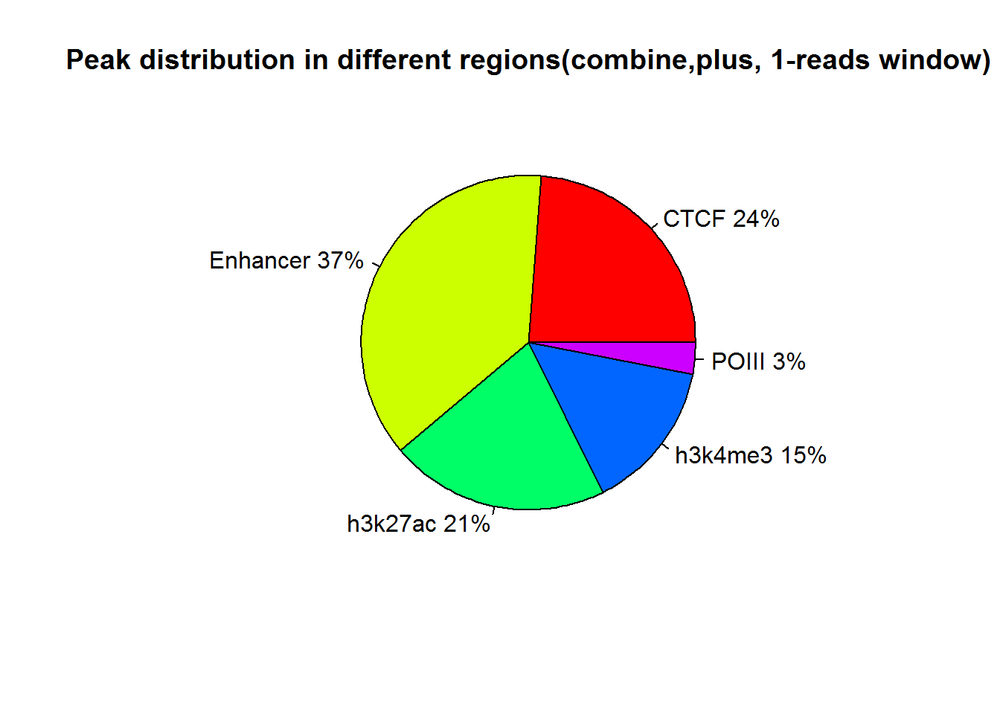
peak distribution

- peak windows in all these regions take <3% of all peaks called.
reads depletion
Reads distribution of 200bp window with CTCF at the center.
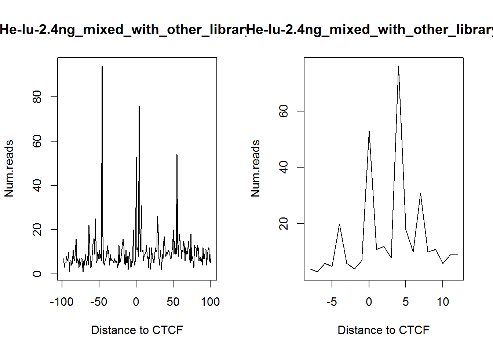

Summary
Overlap pattern at different genomic concentration
- Jump-seq overlaps with Dali’s peaks
Horizontal line is genome-wide overlap rate of 0.0203.
jump.rate=c(0.0829, 0.0922, 0.0933, 0.1264, 0.1397)
dali.rate=c(0.4154, 0.5469, 0.7158, 0.5625, 0.9189)
plot(jump.rate, type="o", ylim=c(0,1), xaxt='n', xlab="samples", ylab="overlap rate", col=1, main="", cex=0.8)
lines(dali.rate, col=2, type="o")
abline(h=0.0203, col=3)
legend(1, 1, c("Jump-seq", "Dali's peak", "background rate"), col=c(1,2, 3), lty=c(1,1, 1))
axis.labels <-c("2.4ng combine ", "6ng", "12ng", "24ng", "48ng(combine)")
axis(1, at=seq(1,5), labels=axis.labels)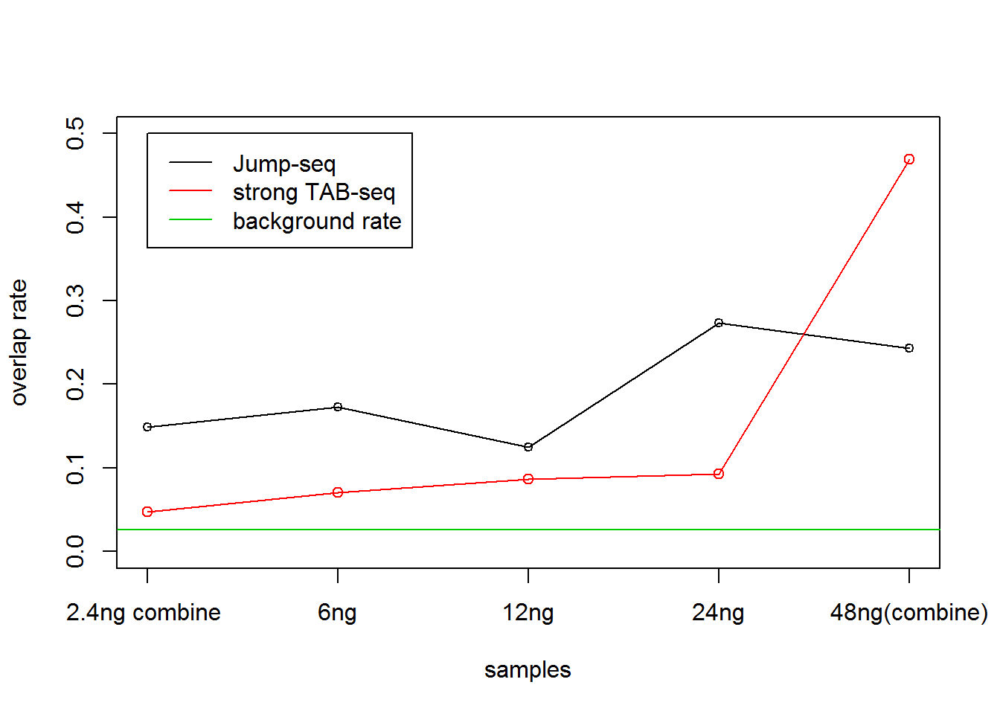
- Jump-seq overlaps with strong TAB-seq
Horizontal line is the genome-wide overlap rate of 0.0258.
jump.rate=c(0.1489, 0.1724, 0.1250, 0.2730, 0.2432)
TAB.rate=c(0.0477, 0.0704, 0.0861, 0.0930, 0.4693)
plot(jump.rate, type="o", ylim=c(0,0.5), xaxt='n', xlab="samples", ylab="overlap rate", col=1, main="", cex=0.8)
lines(TAB.rate, col=2, type="o")
abline(h=0.0260, col=3) # background rate
legend(1, 0.5, c("Jump-seq", "strong TAB-seq", "background rate"), col=c(1,2,3), lty=c(1,1, 1))
axis.labels <-c("2.4ng combine ", "6ng", "12ng", "24ng", "48ng(combine)")
axis(1, at=seq(1,5), labels=axis.labels)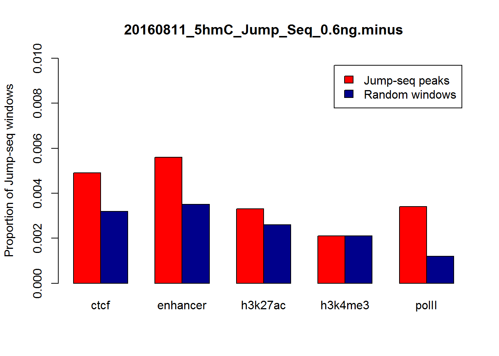
Enrichemnt analysis
percent=matrix(nrow=2, ncol=10)
percent[,1]=c(43213, 10092)/521062
percent[,2]=c(98049, 13382)/521062
percent[,3]=c(61404, 12907)/665737
percent[,4]=c(114794, 17049)/665737
percent[,5]=c(111734, 23171)/1197291
percent[,6]=c(149717, 31057)/1197291
percent[,7]=c(122190, 28799)/1474825
percent[,8]=c(246529, 37851)/1474825
percent[,9]=c(529216, 73689)/3789453
percent[,10]=c(921479, 98580)/3789453
colnames(percent)=rep(c("2.4ng", "6ng", "12ng", "24ng", "48ng"), each=2)
par(mfrow=c(1,2))
barplot(percent[,c(1,3,5,7,9)], beside=T, col=c("red", "darkblue"), legend=c("Jump-seq peaks", "Random windows"), ylim=c(0,0.3),
xlab="Figure 1A", main="", ylab="Proportion of Nano-seal peaks", cex.names=0.5)
barplot(percent[,c(2,4,6,8,10)], beside=T, col=c("red", "darkblue"), legend=c("Jump-seq peaks", "Random windows"), ylim=c(0,0.4),
xlab="Figure 1B", main="", ylab="Proportion of Tab-seq peaks", cex.names=0.5)0.6ng 5hmC replicate
reads information and peak windows
| rep | plus | minus |
|---|---|---|
| rep 1 | 22,997 | 23,664 |
| rep 2 | 29,836 | 29,848 |
| rep | plus | minus |
|---|---|---|
| rep 1 | 20,511 | 21,188 |
| rep 2 | 27,154 | 27,392 |
Whole genome reads distribution of one replicate-plus+minus
overlap with Nano seal sites
| rep | plus | minus |
|---|---|---|
| rep 1 | 0.0582 | 0.0558 |
| rep 2 | 0.0760 | 0.0752 |
Enrichment in cis-regulatory regions
percent=matrix(nrow=2, ncol=5)
percent[,1]=c(0.0049, 0.0032)
percent[,2]=c(0.0056, 0.0035)
percent[,3]=c(0.0033, 0.0026)
percent[,4]=c(0.0021, 0.0021)
percent[,5]=c(0.0034, 0.0012)
colnames(percent)=c("ctcf", "enhancer", "h3k27ac", "h3k4me3", "polII")
barplot(percent, beside=T, col=c("red", "darkblue"), legend=c("Jump-seq peaks", "Random windows"), ylim=c(0,0.01),
ylab="Proportion of Jump-seq windows", main="20160811_5hmC_Jump_Seq_0.6ng.minus", xlab="", cex.names=1)
- cis-regulatory regions are extended 200bp windows.
- jump peaks are 20 bp windows with at least one reads.
5hmC spike in
number of reads versus 5hmC percentage-only consider unique reads
num.reads.plus=c(61720, 49782, 57708, 140773, 97274, 146991, 155893, 156222)
num.reads.minus=c(256, 117, 82, 290, 197, 339, 390, 301)
num.reads=num.reads.plus+num.reads.minus
hmc.ratio=c(0, 0.01, 0.05, 0.1, 0.25, 0.5, 0.75, 1)
plot(hmc.ratio, num.reads, type="o", xlab="5hmC percentage", ylab="Number of reads in spike in", main="20170531-200 bp spike in sequence")num.reads.plus=c(51218, 42860, 52078, 131192, 91995, 141295, 149531, 151531)
num.reads.minus=c(264, 98, 96, 267, 184, 335, 424, 286)
num.reads=num.reads.plus+num.reads.minus
hmc.ratio=c(0, 0.01, 0.05, 0.1, 0.25, 0.5, 0.75, 1)
plot(hmc.ratio, num.reads, type="o", xlab="5hmC percentage", ylab="Number of reads in spike in", main="20170605-200 bp spike in sequence")Only focus on reads from 96 base to 102 base.
num.reads.plus1=c(6394, 8485, 11180, 22850, 18627, 21870, 22936, 23313)
num.reads.plus2=c(5392, 7629, 10587, 21930, 18126, 21722, 22765, 23269)
hmc.ratio=c(0, 0.01, 0.05, 0.1, 0.25, 0.5, 0.75, 1)
plot(hmc.ratio, num.reads.plus1, type="o", xlab="5hmC percentage", ylab="Number of reads in spike in", main="reads in base >=96 & <=102", col=1, ylim=c(5700, 26500))
lines(hmc.ratio, num.reads.plus2, col=2, type="o")
legend(0.8, 20000, c("plus1", "plus2"), col=c(1,2), lty=c(1,1))spike_in_zero=read.table("D:\\ResearchWork\\StatisticalGenetics\\JumpSeq\\20170531\\CHe-LH-lu-1_S1_L006_R1_001.160811_5hmc_spikein.umi_encoded_adaptor_removed_no_mismatch.sorted.dedup_160811_5hmc_spikein_plus_with_1_coverage.ave.perbase", header=F)[[1]]
par(mfrow=c(1,2))
plot(seq(1,200)+1, spike_in_zero, type="l", main="0% hmC model", xlab="Base position", ylab="Num of reads")
plot(seq(96, 102), spike_in_zero[97:103], type="o", main="0% hmC model", xlab="Base position", ylab="Num of reads")spike_in_zero=read.table("D:\\ResearchWork\\StatisticalGenetics\\JumpSeq\\20170531\\CHe-LH-lu-8_S8_L006_R1_001.160811_5hmc_spikein.umi_encoded_adaptor_removed_no_mismatch.sorted.dedup_160811_5hmc_spikein_plus_with_1_coverage.ave.perbase", header=F)[[1]]
par(mfrow=c(1,2))
plot(seq(1,200)+1, spike_in_zero, type="l", main="100% hmC model", xlab="Base position", ylab="Num of reads")
plot(seq(96, 102), spike_in_zero[97:103], type="o", main="100% hmC model", xlab="Base position", ylab="Num of reads")
# there is one base shift allow multiple reads
Only focus on reads from 96 base to 102 base.
full.num.reads.plus1=c(34536, 103817, 282178, 1398644, 1374788, 2427158, 3002380, 3198060)
full.num.reads.plus2=c(21389, 84709, 241444, 1184547, 1171380, 2109440, 2578213, 2757798)
num.reads.plus1=c(34536, 103817, 282178, 1374788, 2427158, 3002380, 3198060)
num.reads.plus2=c(21389, 84709, 241444, 1171380, 2109440, 2578213, 2757798)
hmc.ratio=c(0, 0.01, 0.05, 0.25, 0.5, 0.75, 1)
plot(hmc.ratio, num.reads.plus1, type="o", xlab="5hmC percentage", ylab="Number of reads in spike in", main="reads in base >=96 & <=102", col=1, ylim=c(21000, 3200000), xaxt="n")
axis(1, at =hmc.ratio, las=0, cex.axis=0.5)
lines(hmc.ratio, num.reads.plus2, col=2, type="o")
legend(0.8, 1000000, c("plus1", "plus2"), col=c(1,2), lty=c(1,1))The fitted regression line (red) on the fold change of number of reads (point) at different hmC proportions in spike in
Fold change can be >100.
spike_in_zero=read.table("D:\\ResearchWork\\StatisticalGenetics\\JumpSeq\\20170605\\CHe-LH-lu-1_S1_L007_R1_001.160811_5hmc_spikein.umi_encoded_adaptor_removed_no_mismatch.sorted_160811_5hmc_spikein_plus_with_1_coverage.ave.perbase", header=F)[[1]]
par(mfrow=c(1,2))
plot(seq(1,200)+1, spike_in_zero, type="l", main="0% hmC model", xlab="Base position", ylab="Num of reads")
plot(seq(96, 102), spike_in_zero[97:103], type="o", main="0% hmC model", xlab="Base position", ylab="Num of reads")spike_in_zero=read.table("D:\\ResearchWork\\StatisticalGenetics\\JumpSeq\\20170605\\CHe-LH-lu-8_S8_L007_R1_001.160811_5hmc_spikein.umi_encoded_adaptor_removed_no_mismatch.sorted_160811_5hmc_spikein_plus_with_1_coverage.ave.perbase", header=F)[[1]]
par(mfrow=c(1,2))
plot(seq(1,200)+1, spike_in_zero, type="l", main="100% hmC model", xlab="Base position", ylab="Num of reads")
plot(seq(96, 102), spike_in_zero[97:103], type="o", main="100% hmC model", xlab="Base position", ylab="Num of reads")# there is one base shift 0.5ngmES-correlation
- With each window length, use the the windows with at least one reads, calculate the pairwise correlation between two replicates using reads number in the window, then average the correlation across all possible pairwise combinations (here only randomly pick 10 pairs).

[1] 0.6931962Warning: NAs introduced by coercion
Warning: NAs introduced by coercion[1] 0.9516026Session information
sessionInfo()R version 3.4.3 (2017-11-30)
Platform: x86_64-w64-mingw32/x64 (64-bit)
Running under: Windows 7 x64 (build 7601) Service Pack 1
Matrix products: default
locale:
[1] LC_COLLATE=English_United States.1252
[2] LC_CTYPE=English_United States.1252
[3] LC_MONETARY=English_United States.1252
[4] LC_NUMERIC=C
[5] LC_TIME=English_United States.1252
attached base packages:
[1] stats graphics grDevices utils datasets methods base
loaded via a namespace (and not attached):
[1] compiler_3.4.3 backports_1.0.5 magrittr_1.5 rprojroot_1.3-1
[5] tools_3.4.3 htmltools_0.3.5 yaml_2.1.16 Rcpp_0.12.10
[9] stringi_1.1.5 rmarkdown_1.8 highr_0.6 knitr_1.17
[13] git2r_0.21.0 stringr_1.2.0 digest_0.6.12 evaluate_0.10 This R Markdown site was created with workflowr